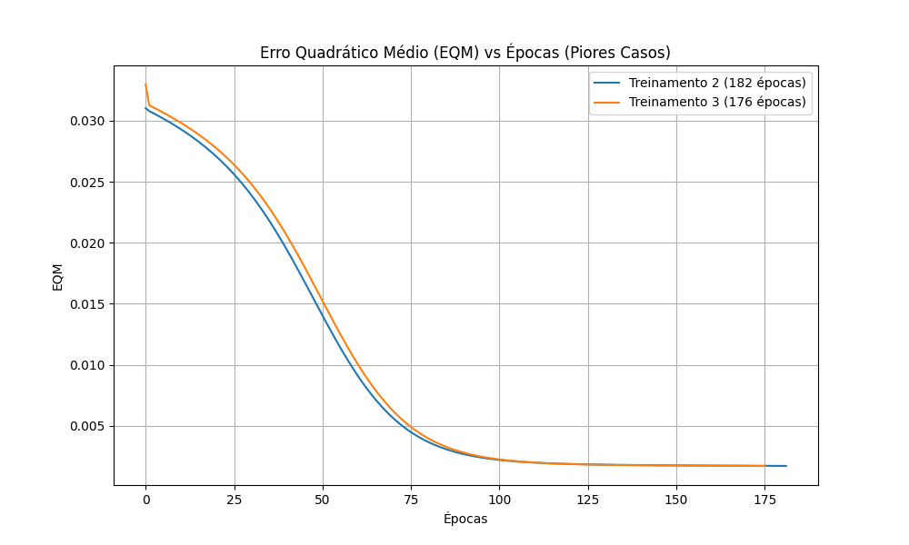
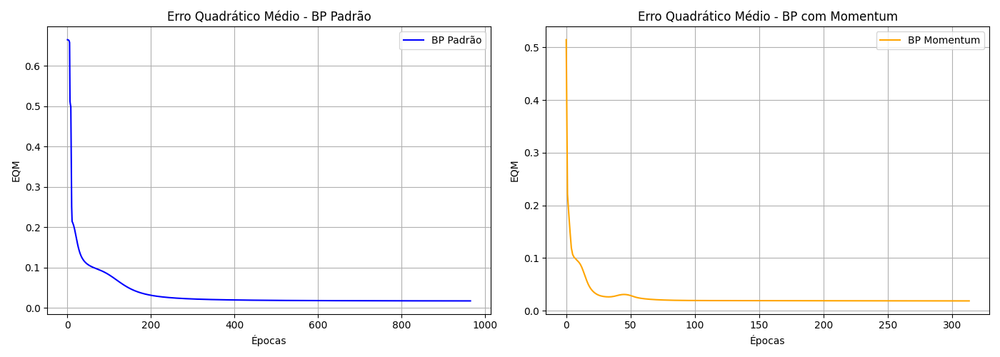
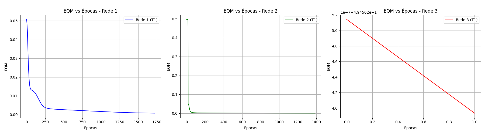
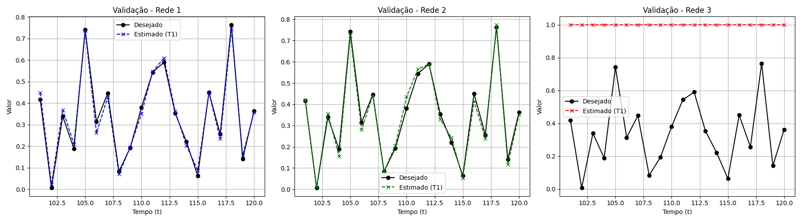

<!DOCTYPE html>
<html lang="pt-BR">
<head>
    <meta charset="UTF-8">
    <meta name="viewport" content="width=device-width, initial-scale=1.0">
    <title>Atividade de Redes Neurais - Caderno de Resoluções</title>
    <link rel="preconnect" href="https://fonts.googleapis.com">
    <link rel="preconnect" href="https://fonts.gstatic.com" crossorigin>
    <link href="https://fonts.googleapis.com/css2?family=Inter:wght@300;400;600;800&family=Outfit:wght@500;700&display=swap" rel="stylesheet">
    <script type="module">
      import mermaid from 'https://cdn.jsdelivr.net/npm/mermaid@10/dist/mermaid.esm.min.mjs';
      mermaid.initialize({ startOnLoad: true, theme: 'dark' });
    </script>
    <style>
        :root {
            --bg-color: #0f172a;
            --glass-bg: rgba(30, 41, 59, 0.7);
            --glass-border: rgba(255, 255, 255, 0.1);
            --text-main: #f8fafc;
            --text-muted: #94a3b8;
            --accent: #3b82f6;
            --accent-glow: rgba(59, 130, 246, 0.5);
            --success: #10b981;
            --danger: #ef4444;
        }

        * {
            box-sizing: border-box;
            margin: 0;
            padding: 0;
        }

        body {
            font-family: 'Inter', sans-serif;
            background-color: var(--bg-color);
            background-image: 
                radial-gradient(at 0% 0%, rgba(59, 130, 246, 0.15) 0px, transparent 50%),
                radial-gradient(at 100% 100%, rgba(139, 92, 246, 0.15) 0px, transparent 50%);
            background-attachment: fixed;
            color: var(--text-main);
            line-height: 1.6;
            padding: 2rem;
            min-height: 100vh;
        }

        .container {
            max-width: 1200px;
            margin: 0 auto;
        }

        h1, h2, h3 {
            font-family: 'Outfit', sans-serif;
        }

        .header {
            text-align: center;
            margin-bottom: 2rem;
            animation: fadeInDown 0.8s ease-out;
        }

        .header h1 {
            font-size: 3rem;
            background: linear-gradient(to right, #60a5fa, #c084fc);
            -webkit-background-clip: text;
            -webkit-text-fill-color: transparent;
            margin-bottom: 0.5rem;
        }

        .header p {
            color: var(--text-muted);
            font-size: 1.1rem;
        }

        /* Tabs System */
        .tabs {
            display: flex;
            justify-content: center;
            gap: 1rem;
            margin-bottom: 2rem;
            animation: fadeInDown 0.8s ease-out;
        }

        .tab-btn {
            background: var(--glass-bg);
            border: 1px solid var(--glass-border);
            color: var(--text-muted);
            padding: 0.75rem 2rem;
            border-radius: 0.5rem;
            cursor: pointer;
            font-family: 'Outfit', sans-serif;
            font-size: 1.2rem;
            transition: all 0.3s ease;
        }

        .tab-btn:hover {
            background: rgba(255, 255, 255, 0.1);
            color: var(--text-main);
        }

        .tab-btn.active {
            background: var(--accent);
            color: #fff;
            border-color: var(--accent);
            box-shadow: 0 0 15px var(--accent-glow);
        }

        .tab-content {
            display: none;
            animation: fadeIn 0.5s ease-out;
        }

        .tab-content.active {
            display: block;
        }

        .grid {
            display: grid;
            grid-template-columns: 1fr 1fr;
            gap: 2rem;
        }

        @media (max-width: 900px) {
            .grid {
                grid-template-columns: 1fr;
            }
        }

        .card {
            background: var(--glass-bg);
            backdrop-filter: blur(12px);
            -webkit-backdrop-filter: blur(12px);
            border: 1px solid var(--glass-border);
            border-radius: 1rem;
            padding: 2rem;
            box-shadow: 0 4px 6px -1px rgba(0, 0, 0, 0.1), 0 2px 4px -1px rgba(0, 0, 0, 0.06);
            transition: transform 0.3s ease, box-shadow 0.3s ease;
        }

        .card:hover {
            transform: translateY(-5px);
            box-shadow: 0 10px 15px -3px rgba(0, 0, 0, 0.2), 0 0 20px var(--accent-glow);
        }

        .card h2 {
            font-size: 1.5rem;
            margin-bottom: 1.5rem;
            color: #fff;
            display: flex;
            align-items: center;
            gap: 0.5rem;
            border-bottom: 1px solid var(--glass-border);
            padding-bottom: 0.75rem;
        }

        .card h2::before {
            content: '';
            display: block;
            width: 12px;
            height: 12px;
            background: var(--accent);
            border-radius: 50%;
            box-shadow: 0 0 10px var(--accent);
        }

        .description {
            color: var(--text-muted);
            margin-bottom: 1rem;
            text-align: justify;
        }

        .table-container {
            width: 100%;
            overflow-x: auto;
            border-radius: 0.5rem;
            margin-top: 1rem;
            border: 1px solid var(--glass-border);
        }

        table {
            width: 100%;
            border-collapse: collapse;
            text-align: center;
            white-space: nowrap;
        }

        th, td {
            padding: 0.75rem 1rem;
            border-bottom: 1px solid rgba(255,255,255,0.05);
        }

        th {
            background: rgba(0,0,0,0.2);
            font-weight: 600;
            color: #cbd5e1;
            font-size: 0.9rem;
            letter-spacing: 0.05em;
        }

        tbody tr:hover {
            background: rgba(255,255,255,0.03);
        }

        .class-c1 { color: var(--danger); font-weight: 600; }
        .class-c2 { color: var(--success); font-weight: 600; }

        .answer-block {
            margin-bottom: 1.5rem;
        }
        .answer-block:last-child {
            margin-bottom: 0;
        }
        
        .answer-block h3 {
            font-size: 1.1rem;
            color: #e2e8f0;
            margin-bottom: 0.5rem;
        }

        .answer-block p {
            background: rgba(0,0,0,0.2);
            padding: 1rem;
            border-radius: 0.5rem;
            border-left: 4px solid var(--accent);
            color: var(--text-muted);
        }

        .img-container {
            text-align: center;
            margin-top: 1.5rem;
        }

        .img-container img {
            max-width: 100%;
            border-radius: 0.5rem;
            border: 1px solid var(--glass-border);
            box-shadow: 0 4px 6px rgba(0,0,0,0.3);
        }

        @keyframes fadeInDown {
            from { opacity: 0; transform: translateY(-20px); }
            to { opacity: 1; transform: translateY(0); }
        }

        @keyframes fadeIn {
            from { opacity: 0; }
            to { opacity: 1; }
        }
    </style>
    <script>
        function openTab(evt, tabName) {
            var i, tabcontent, tablinks;
            tabcontent = document.getElementsByClassName("tab-content");
            for (i = 0; i < tabcontent.length; i++) {
                tabcontent[i].style.display = "none";
                tabcontent[i].classList.remove("active");
            }
            tablinks = document.getElementsByClassName("tab-btn");
            for (i = 0; i < tablinks.length; i++) {
                tablinks[i].className = tablinks[i].className.replace(" active", "");
            }
            document.getElementById(tabName).style.display = "block";
            document.getElementById(tabName).classList.add("active");
            evt.currentTarget.className += " active";
        }
    </script>
</head>
<body>

<div class="container">
    <div class="header">
        <h1>Redes Neurais Artificiais</h1>
        <p>Caderno de Resoluções de Atividades</p>
    </div>

    <!-- TABS -->
    <div class="tabs">
        <button class="tab-btn active" onclick="openTab(event, 'perceptron')">Perceptron</button>
        <button class="tab-btn" onclick="openTab(event, 'adaline')">ADALINE</button>
        <button class="tab-btn" onclick="openTab(event, 'pmc1')">PMC 1</button>
        <button class="tab-btn" onclick="openTab(event, 'pmc2')">PMC 2</button>
        <button class="tab-btn" onclick="openTab(event, 'pmc3')">PMC 3</button>
        <button class="tab-btn" onclick="openTab(event, 'rbf1')">RBF 1</button>
        <button class="tab-btn" onclick="openTab(event, 'rbf2')">RBF 2</button>
        <button class="tab-btn" onclick="openTab(event, 'hopfield')">Hopfield</button>
        <button class="tab-btn" onclick="openTab(event, 'kohonen')">Kohonen</button>
    </div>

    <!-- TAB PERCEPTRON -->
    <div id="perceptron" class="tab-content active" style="display: block;">
        <div class="grid">
            <!-- Contexto do Problema Perceptron -->
            <div class="card" style="grid-column: 1 / -1;">
                <h2>Contexto do Problema</h2>
                <p class="description">
                    A partir da análise de um processo de destilação fracionada de petróleo observou-se que determinado óleo poderia ser classificado em duas classes de pureza {C1 e C2} a partir da medição de três grandezas {x1, x2 e x3} que representam propriedades físico-químicas.
                    A classificação é feita com um <strong>Perceptron</strong> usando a regra de Hebb (aprendizado supervisionado) com taxa de aprendizagem $\eta = 0.01$, inicializando os pesos com valores aleatórios entre 0 e 1.
                </p>
                <div style="text-align: center; margin-top: 1rem;">
                    <div class="mermaid">
                        graph LR
                            X0(("x0 = 1 (Bias)")) -->|w0| S((Σ))
                            X1(("x1")) -->|w1| S
                            X2(("x2")) -->|w2| S
                            X3(("x3")) -->|w3| S
                            S --> F["Sinal(v)"]
                            F --> Y(("y"))
                            style S fill:#1e293b,stroke:#3b82f6,stroke-width:2px,color:#fff
                            style Y fill:#10b981,stroke:#fff,stroke-width:2px,color:#fff
                    </div>
                </div>
            </div>

            <!-- Atividades 1 e 2 -->
            <div class="card" style="grid-column: 1 / -1;">
                <h2>1 e 2. Treinamentos Realizados</h2>
                <p class="description">Foram executados 5 treinamentos independentes até o erro chegar a zero na base de dados de treinamento. Em cada execução, os pesos iniciais foram gerados aleatoriamente entre 0 e 1.</p>
                
                <div class="table-container">
                    <table>
                        <thead>
                            <tr>
                                <th>Treinamento</th>
                                <th>Épocas</th>
                                <th>Bias ($w_0$)</th>
                                <th>$w_1$</th>
                                <th>$w_2$</th>
                                <th>$w_3$</th>
                            </tr>
                        </thead>
                        <tbody>
                            <tr><td>T1</td><td>401</td><td>3.0962</td><td>1.5763</td><td>2.5009</td><td>-0.7385</td></tr>
                            <tr><td>T2</td><td>386</td><td>3.1050</td><td>1.5580</td><td>2.4874</td><td>-0.7390</td></tr>
                            <tr><td>T3</td><td>424</td><td>3.1365</td><td>1.6047</td><td>2.5198</td><td>-0.7464</td></tr>
                            <tr><td>T4</td><td>358</td><td>3.0413</td><td>1.5454</td><td>2.4485</td><td>-0.7256</td></tr>
                            <tr><td>T5</td><td>327</td><td>2.9099</td><td>1.4042</td><td>2.4142</td><td>-0.6965</td></tr>
                        </tbody>
                    </table>
                </div>
            </div>

            <!-- Atividade 3 -->
            <div class="card" style="grid-column: 1 / -1;">
                <h2>3. Classificação das Novas Amostras</h2>
                <p class="description">O perceptron treinado foi aplicado nas novas amostras (dados de teste). Como as 5 execuções convergiram corretamente para um plano de separação global equivalente, a classificação resultante é idêntica em todos os modelos.</p>
                
                <div class="table-container">
                    <table>
                        <thead>
                            <tr>
                                <th>Amostra</th>
                                <th>x1</th>
                                <th>x2</th>
                                <th>x3</th>
                                <th>y(T1)</th>
                                <th>y(T2)</th>
                                <th>y(T3)</th>
                                <th>y(T4)</th>
                                <th>y(T5)</th>
                            </tr>
                        </thead>
                        <tbody>
                            <tr><td>1</td><td>-0.3565</td><td>0.0620</td><td>5.9891</td><td class="class-c1">-1</td><td class="class-c1">-1</td><td class="class-c1">-1</td><td class="class-c1">-1</td><td class="class-c1">-1</td></tr>
                            <tr><td>2</td><td>-0.7842</td><td>1.1267</td><td>5.5912</td><td class="class-c2">1</td><td class="class-c2">1</td><td class="class-c2">1</td><td class="class-c2">1</td><td class="class-c2">1</td></tr>
                            <tr><td>3</td><td>0.3012</td><td>0.5611</td><td>5.8234</td><td class="class-c2">1</td><td class="class-c2">1</td><td class="class-c2">1</td><td class="class-c2">1</td><td class="class-c2">1</td></tr>
                            <tr><td>4</td><td>0.7757</td><td>1.0648</td><td>8.0677</td><td class="class-c2">1</td><td class="class-c2">1</td><td class="class-c2">1</td><td class="class-c2">1</td><td class="class-c2">1</td></tr>
                            <tr><td>5</td><td>0.1570</td><td>0.8028</td><td>6.3040</td><td class="class-c2">1</td><td class="class-c2">1</td><td class="class-c2">1</td><td class="class-c2">1</td><td class="class-c2">1</td></tr>
                            <tr><td>6</td><td>-0.7014</td><td>1.0316</td><td>3.6005</td><td class="class-c2">1</td><td class="class-c2">1</td><td class="class-c2">1</td><td class="class-c2">1</td><td class="class-c2">1</td></tr>
                            <tr><td>7</td><td>0.3748</td><td>0.1536</td><td>6.1537</td><td class="class-c1">-1</td><td class="class-c1">-1</td><td class="class-c1">-1</td><td class="class-c1">-1</td><td class="class-c1">-1</td></tr>
                            <tr><td>8</td><td>-0.6920</td><td>0.9404</td><td>4.4058</td><td class="class-c2">1</td><td class="class-c2">1</td><td class="class-c2">1</td><td class="class-c2">1</td><td class="class-c2">1</td></tr>
                            <tr><td>9</td><td>-1.3970</td><td>0.7141</td><td>4.9263</td><td class="class-c1">-1</td><td class="class-c1">-1</td><td class="class-c1">-1</td><td class="class-c1">-1</td><td class="class-c1">-1</td></tr>
                            <tr><td>10</td><td>-1.8842</td><td>-0.2805</td><td>1.2548</td><td class="class-c1">-1</td><td class="class-c1">-1</td><td class="class-c1">-1</td><td class="class-c1">-1</td><td class="class-c1">-1</td></tr>
                        </tbody>
                    </table>
                </div>
            </div>

            <!-- Questões Discursivas -->
            <div class="card" style="grid-column: 1 / -1;">
                <h2>4 e 5. Questões Teóricas</h2>
                
                <div class="answer-block">
                    <h3>4. Explique por que o número de épocas de treinamento varia a cada vez que executamos o treinamento.</h3>
                    <p>
                        O algoritmo do Perceptron realiza uma busca no espaço para encontrar um "hiperplano" (uma reta/plano no espaço vetorial) que consiga separar perfeitamente as classes C1 e C2. 
                        <br><br>
                        O tempo que ele leva para encontrar esse plano depende unicamente de onde ele começou a busca. Como inicializamos o vetor de pesos com valores aleatórios diferentes a cada execução, o ponto de partida muda. Isso faz com que a trajetória de ajustes e a quantidade de passos (épocas) até o erro zerar variem significativamente.
                    </p>
                </div>

                <div class="answer-block">
                    <h3>5. Qual a principal limitação do perceptron quando aplicado em problemas de classificação?</h3>
                    <p>
                        A principal limitação do Perceptron clássico (de camada única) é que ele <strong>só consegue resolver problemas que sejam linearmente separáveis</strong>.
                        <br><br>
                        Isso significa que ele só terá sucesso se for possível traçar um limite reto (uma reta no plano 2D, ou um hiperplano em n-dimensões) dividindo as duas classes sem sobreposição. Se os dados possuírem uma distribuição não-linear (como no famoso problema lógico do XOR), o perceptron entrará em um loop infinito, ajustando os pesos sem parar, pois nunca conseguirá alcançar o erro igual a zero.
                    </p>
                </div>
            </div>
        </div>
    </div>

    <!-- TAB ADALINE -->
    <div id="adaline" class="tab-content">
        <div class="grid">
            <!-- Contexto do Problema ADALINE -->
            <div class="card" style="grid-column: 1 / -1;">
                <h2>Contexto do Problema (Ajuste de Válvulas)</h2>
                <p class="description">
                    Um sistema envia um sinal codificado de 4 grandezas {x1, x2, x3, x4} para ajustar duas válvulas (A ou B). Durante a transmissão, os sinais sofrem interferências (ruídos). Uma rede <strong>ADALINE</strong> foi treinada com dados ruidosos para classificar se o sinal deve ir para a válvula A (-1) ou B (+1).
                    Utilizou-se a <strong>Regra Delta</strong>, com taxa de aprendizado $\eta = 0.0025$, precisão de $10^{-6}$, e 5 inicializações aleatórias de pesos.
                </p>
                <div style="text-align: center; margin-top: 1rem;">
                    <div class="mermaid">
                        graph LR
                            X0(("x0 = 1")) -->|w0| S((Σ))
                            X1(("x1")) -->|w1| S
                            X2(("x2")) -->|w2| S
                            X3(("x3")) -->|w3| S
                            X4(("x4")) -->|w4| S
                            S -->|v| ERRO{"Erro = d - v"}
                            S -->|v| F["Sinal(v)"]
                            F --> Y(("y"))
                            style S fill:#1e293b,stroke:#3b82f6,stroke-width:2px,color:#fff
                            style Y fill:#10b981,stroke:#fff,stroke-width:2px,color:#fff
                            style ERRO fill:#ef4444,stroke:#fff,stroke-width:2px,color:#fff
                    </div>
                </div>
            </div>

            <!-- Treinamentos Adaline -->
            <div class="card" style="grid-column: 1 / -1;">
                <h2>1 e 2. Treinamentos Realizados</h2>
                <p class="description">Foram executados 5 treinamentos rastreando os pesos iniciais, os pesos finais ao atingir a convergência do Erro Quadrático Médio (EQM) menor que a precisão, e o total de épocas.</p>
                
                <div class="table-container">
                    <table>
                        <thead>
                            <tr>
                                <th>Treino</th>
                                <th>$w_{0_{in}}$</th>
                                <th>$w_{1_{in}}$</th>
                                <th>$w_{2_{in}}$</th>
                                <th>$w_{3_{in}}$</th>
                                <th>$w_{4_{in}}$</th>
                                <th>$w_{0_{fin}}$</th>
                                <th>$w_{1_{fin}}$</th>
                                <th>$w_{2_{fin}}$</th>
                                <th>$w_{3_{fin}}$</th>
                                <th>$w_{4_{fin}}$</th>
                                <th>Épocas</th>
                            </tr>
                        </thead>
                        <tbody>
                            <tr><td>1º (T1)</td><td>0.1344</td><td>0.8474</td><td>0.7638</td><td>0.2551</td><td>0.4954</td><td>1.8131</td><td>1.3128</td><td>1.6423</td><td>-0.4277</td><td>-1.1778</td><td>851</td></tr>
                            <tr><td>2º (T2)</td><td>0.9560</td><td>0.9478</td><td>0.0566</td><td>0.0849</td><td>0.8355</td><td>1.8131</td><td>1.3127</td><td>1.6421</td><td>-0.4281</td><td>-1.1777</td><td>818</td></tr>
                            <tr><td>3º (T3)</td><td>0.2380</td><td>0.5442</td><td>0.3700</td><td>0.6039</td><td>0.6257</td><td>1.8131</td><td>1.3129</td><td>1.6423</td><td>-0.4277</td><td>-1.1778</td><td>878</td></tr>
                            <tr><td>4º (T4)</td><td>0.2360</td><td>0.1032</td><td>0.3961</td><td>0.1550</td><td>0.0665</td><td>1.8131</td><td>1.3128</td><td>1.6422</td><td>-0.4279</td><td>-1.1777</td><td>849</td></tr>
                            <tr><td>5º (T5)</td><td>0.6229</td><td>0.7418</td><td>0.7952</td><td>0.9425</td><td>0.7399</td><td>1.8131</td><td>1.3129</td><td>1.6424</td><td>-0.4276</td><td>-1.1778</td><td>857</td></tr>
                        </tbody>
                    </table>
                </div>
            </div>

            <!-- Gráfico EQM -->
            <div class="card" style="grid-column: 1 / -1;">
                <h2>3. Gráfico do EQM em função da Época</h2>
                <p class="description">Gráfico dos valores de Erro Quadrático Médio (EQM) ao longo do treinamento para os dois primeiros cenários (T1 e T2).</p>
                <div class="img-container">
                    
                </div>
            </div>

            <!-- Classificação e Explicação -->
            <div class="card" style="grid-column: 1 / 2;">
                <h2>4. Classificação das Amostras</h2>
                <p class="description">Resultados da classificação das 15 novas amostras ruidosas por cada treinamento (Válvula A = -1, Válvula B = +1).</p>
                
                <div class="table-container">
                    <table>
                        <thead>
                            <tr>
                                <th>Amostra</th>
                                <th>y(T1) a y(T5)</th>
                                <th>Resultado</th>
                            </tr>
                        </thead>
                        <tbody>
                            <tr><td>1 a 2</td><td class="class-c1">-1</td><td>Válvula A</td></tr>
                            <tr><td>3</td><td class="class-c2">+1</td><td>Válvula B</td></tr>
                            <tr><td>4 a 5</td><td class="class-c1">-1</td><td>Válvula A</td></tr>
                            <tr><td>6 a 9</td><td class="class-c2">+1</td><td>Válvula B</td></tr>
                            <tr><td>10 a 11</td><td class="class-c1">-1</td><td>Válvula A</td></tr>
                            <tr><td>12</td><td class="class-c2">+1</td><td>Válvula B</td></tr>
                            <tr><td>13 a 14</td><td class="class-c1">-1</td><td>Válvula A</td></tr>
                            <tr><td>15</td><td class="class-c2">+1</td><td>Válvula B</td></tr>
                        </tbody>
                    </table>
                </div>
            </div>

            <div class="card" style="grid-column: 2 / 3;">
                <h2>5. Comportamento da Convergência</h2>
                <div class="answer-block">
                    <h3>Por que o número de épocas é diferente, mas os pesos convergem para os mesmos valores?</h3>
                    <p>
                        Ao contrário do Perceptron (que possui múltiplos planos de separação válidos quando os dados são linearmente separáveis), o modelo ADALINE busca minimizar o Erro Quadrático Médio (EQM) contínuo. 
                        <br><br>
                        Como a função de custo (EQM) para uma rede com saída linear é uma superfície quadrática estritamente convexa (um paraboloide multidimensional), ela possui um <strong>único ponto de mínimo global</strong>. 
                        <br><br>
                        Portanto, não importa de onde o algoritmo comece (pesos iniciais aleatórios), a Regra Delta orientada pelo gradiente sempre "deslizará" a curva em direção ao fundo desse mesmo "poço". O número de épocas varia porque a distância do ponto de partida até esse fundo muda, mas o ponto de destino final (os pesos ótimos) é matematicamente o mesmo.
                    </p>
                </div>
            </div>
        </div>
    </div>


    <!-- TAB PMC 1 -->
    <div id="pmc1" class="tab-content">
        <div class="grid">
            <!-- Contexto do Problema PMC 1 -->
            <div class="card" style="grid-column: 1 / -1;">
                <h2>Contexto do Problema (Ressonância Magnética)</h2>
                <p class="description">
                    Estimar a energia absorvida (y) a partir de três grandezas (x1, x2, x3) para um processador de imagens de ressonância magnética utilizando um <strong>Perceptron Multicamadas (PMC)</strong>. 
                    Topologia utilizada: 3 entradas, 5 neurônios na camada oculta, 1 neurônio na camada de saída. Função de ativação logística em todas as camadas, $\eta = 0.1$, e precisão de $10^{-6}$.
                </p>
                <div style="text-align: center; margin-top: 1rem;">
                    <div class="mermaid">
                        graph LR
                            X1(("x1")) --> H1(("h1"))
                            X2(("x2")) --> H1
                            X3(("x3")) --> H1
                            X1 --> H2(("h2"))
                            X2 --> H2
                            X3 --> H2
                            X1 --> H3(("..."))
                            X2 --> H3
                            X3 --> H3
                            H1 --> Y(("y"))
                            H2 --> Y
                            H3 --> Y
                            style Y fill:#10b981,stroke:#fff,stroke-width:2px,color:#fff
                    </div>
                </div>
            </div>

            <!-- Treinamentos -->
            <div class="card" style="grid-column: 1 / -1;">
                <h2>1 e 2. Treinamentos Realizados</h2>
                <p class="description">Foram executados 5 treinamentos com pesos iniciais aleatórios. Abaixo estão os resultados de erro e épocas.</p>
                <div class="table-container">
                    <table>
                        <thead>
                            <tr>
                                <th>Treinamento</th>
                                <th>Erro Quadrático Médio</th>
                                <th>Número de Épocas</th>
                            </tr>
                        </thead>
                        <tbody>
                            <tr><td>1º (T1)</td><td>0.001645</td><td>153</td></tr>
                            <tr><td>2º (T2)</td><td>0.001714</td><td>182</td></tr>
                            <tr><td>3º (T3)</td><td>0.001708</td><td>176</td></tr>
                            <tr><td>4º (T4)</td><td>0.001654</td><td>157</td></tr>
                            <tr><td>5º (T5)</td><td>0.001637</td><td>151</td></tr>
                        </tbody>
                    </table>
                </div>
            </div>

            <!-- Gráficos -->
            <div class="card" style="grid-column: 1 / -1;">
                <h2>3. Gráfico do EQM em Função da Época (Piores Casos)</h2>
                <p class="description">Gráfico dos valores de EQM ao longo do treinamento para os dois casos que exigiram mais épocas para convergir (T2 e T3).</p>
                <div class="img-container">
                    
                </div>
            </div>

            <!-- Discursiva -->
            <div class="card" style="grid-column: 1 / -1;">
                <h2>4. Análise de Variação</h2>
                <div class="answer-block">
                    <h3>Por que o EQM e o número de épocas variam entre os treinamentos?</h3>
                    <p>
                        A variação decorre da <strong>inicialização aleatória dos pesos sinápticos</strong>. Diferente do modelo ADALINE de camada única, cuja superfície de erro é convexa (possuindo apenas um mínimo global), as redes Perceptron Multicamadas (PMC) formam uma superfície de erro complexa, cheia de vales, planaltos e múltiplos <strong>mínimos locais</strong>.
                        <br><br>
                        Dependendo do ponto de partida (pesos iniciais), o algoritmo de <i>backpropagation</i> (descida do gradiente) percorre um caminho diferente através desse espaço de peso, atingindo diferentes pontos de convergência na superfície de erro, resultando em diferentes valores de EQM final e exigindo um número distinto de épocas para satisfazer o critério de parada.
                    </p>
                </div>
            </div>

            <!-- Validação -->
            <div class="card" style="grid-column: 1 / -1;">
                <h2>5 e 6. Validação com Conjunto de Teste</h2>
                <p class="description">Os 5 modelos foram avaliados em 20 amostras de teste não vistas no treinamento. O Erro Relativo (%) e a Variância foram calculados em relação à saída desejada (d).</p>
                <div class="table-container">
                    <table>
                        <thead>
                            <tr>
                                <th>Amostra</th><th>d</th>
                                <th>y(T1)</th><th>y(T2)</th><th>y(T3)</th><th>y(T4)</th><th>y(T5)</th>
                            </tr>
                        </thead>
                        <tbody>
                            <tr><td>1</td><td>0.4831</td><td>0.4802</td><td>0.4753</td><td>0.4753</td><td>0.4785</td><td>0.4792</td></tr>
                            <tr><td>2</td><td>0.5965</td><td>0.5893</td><td>0.5849</td><td>0.5874</td><td>0.5882</td><td>0.5890</td></tr>
                            <tr><td>3</td><td>0.5318</td><td>0.5210</td><td>0.5167</td><td>0.5191</td><td>0.5213</td><td>0.5208</td></tr>
                            <tr><td>4</td><td>0.6843</td><td>0.7085</td><td>0.7088</td><td>0.7061</td><td>0.7089</td><td>0.7081</td></tr>
                            <tr><td>5</td><td>0.2872</td><td>0.2892</td><td>0.3009</td><td>0.2922</td><td>0.2911</td><td>0.2919</td></tr>
                            <tr><td>6</td><td>0.7663</td><td>0.7550</td><td>0.7560</td><td>0.7564</td><td>0.7564</td><td>0.7552</td></tr>
                            <tr><td>7</td><td>0.5666</td><td>0.5662</td><td>0.5594</td><td>0.5633</td><td>0.5639</td><td>0.5651</td></tr>
                            <tr><td>8</td><td>0.6601</td><td>0.6804</td><td>0.6764</td><td>0.6805</td><td>0.6794</td><td>0.6795</td></tr>
                            <tr><td>9</td><td>0.5427</td><td>0.5281</td><td>0.5224</td><td>0.5265</td><td>0.5268</td><td>0.5279</td></tr>
                            <tr><td>10</td><td>0.5836</td><td>0.6008</td><td>0.5941</td><td>0.5985</td><td>0.5993</td><td>0.5993</td></tr>
                            <tr><td>11</td><td>0.6950</td><td>0.6925</td><td>0.6894</td><td>0.6925</td><td>0.6908</td><td>0.6916</td></tr>
                            <tr><td>12</td><td>0.6790</td><td>0.6750</td><td>0.6737</td><td>0.6725</td><td>0.6748</td><td>0.6745</td></tr>
                            <tr><td>13</td><td>0.2956</td><td>0.2950</td><td>0.3071</td><td>0.2967</td><td>0.3003</td><td>0.2974</td></tr>
                            <tr><td>14</td><td>0.7742</td><td>0.7848</td><td>0.7879</td><td>0.7853</td><td>0.7852</td><td>0.7857</td></tr>
                            <tr><td>15</td><td>0.4662</td><td>0.4601</td><td>0.4557</td><td>0.4548</td><td>0.4576</td><td>0.4593</td></tr>
                            <tr><td>16</td><td>0.8093</td><td>0.8198</td><td>0.8236</td><td>0.8222</td><td>0.8224</td><td>0.8211</td></tr>
                            <tr><td>17</td><td>0.7581</td><td>0.7830</td><td>0.7835</td><td>0.7835</td><td>0.7820</td><td>0.7827</td></tr>
                            <tr><td>18</td><td>0.5826</td><td>0.5880</td><td>0.5836</td><td>0.5870</td><td>0.5866</td><td>0.5877</td></tr>
                            <tr><td>19</td><td>0.7938</td><td>0.8010</td><td>0.8042</td><td>0.8005</td><td>0.8019</td><td>0.8013</td></tr>
                            <tr><td>20</td><td>0.5012</td><td>0.4917</td><td>0.4855</td><td>0.4868</td><td>0.4885</td><td>0.4905</td></tr>
                        </tbody>
                        <tfoot>
                            <tr style="background: rgba(255,255,255,0.05);">
                                <td colspan="2" style="font-weight:bold; text-align:right;">Erro Relativo Médio (%)</td>
                                <td>1.5233</td><td>2.2294</td><td>1.7978</td><td>1.7345</td><td>1.6357</td>
                            </tr>
                            <tr style="background: rgba(255,255,255,0.05);">
                                <td colspan="2" style="font-weight:bold; text-align:right;">Variância (%)</td>
                                <td>1.0941</td><td>1.3926</td><td>0.9355</td><td>0.8410</td><td>0.8810</td>
                            </tr>
                        </tfoot>
                    </table>
                </div>
                
                <div class="answer-block" style="margin-top: 2rem;">
                    <h3>6. Configuração Mais Adequada</h3>
                    <p>
                        A configuração mais adequada é o <strong>Treinamento 1 (T1)</strong>. Embora o T5 tenha convergido em menos épocas durante o treinamento, o <strong>T1</strong> apresentou o <strong>menor Erro Relativo Médio (1.5233%)</strong> quando exposto a dados inéditos (conjunto de teste), demonstrando a melhor capacidade de <strong>generalização</strong> para o sistema de ressonância magnética.
                    </p>
                </div>
            </div>
        </div>
    </div>


    <!-- TAB PMC 2 -->
    <div id="pmc2" class="tab-content">
        <div class="grid">
            <!-- Contexto do Problema PMC 2 -->
            <div class="card" style="grid-column: 1 / -1;">
                <h2>Contexto do Problema (Processamento de Bebidas)</h2>
                <p class="description">
                    Nesta atividade, a rede Perceptron Multicamadas (PMC) foi utilizada para classificar o tipo de conservante (A, B ou C) a ser aplicado em bebidas, baseado em 4 variáveis reais (Teor de Água, Grau de Acidez, Temperatura e Tensão Superficial).
                    A topologia tem 4 neurônios de entrada, 15 neurônios na camada oculta, e 3 neurônios de saída, com codificação *one-hot* para a classe.
                    <br><br>
                    O objetivo foi comparar o algoritmo de <strong>Backpropagation Padrão</strong> com o <strong>Backpropagation com Momentum</strong> (fator = 0.9), ambos partindo dos mesmos pesos iniciais e $\eta = 0.1$.
                </p>
                <div style="text-align: center; margin-top: 1rem;">
                    <div class="mermaid">
                        graph LR
                            X1(("x1")) --> H1(("h1"))
                            X2(("x2")) --> H1
                            X3(("x3")) --> H1
                            X4(("x4")) --> H1
                            H1 --> Y1(("y1 (A)"))
                            H1 --> Y2(("y2 (B)"))
                            H1 --> Y3(("y3 (C)"))
                            style Y1 fill:#10b981,stroke:#fff,stroke-width:2px,color:#fff
                            style Y2 fill:#3b82f6,stroke:#fff,stroke-width:2px,color:#fff
                            style Y3 fill:#8b5cf6,stroke:#fff,stroke-width:2px,color:#fff
                    </div>
                </div>
            </div>

            <!-- Treinamentos -->
            <div class="card" style="grid-column: 1 / -1;">
                <h2>1 e 2. Padrão vs Momentum</h2>
                <p class="description">Resultados de convergência para a precisão de $10^{-6}$ e o respectivo tempo de processamento.</p>
                <div class="table-container">
                    <table>
                        <thead>
                            <tr>
                                <th>Algoritmo</th>
                                <th>Épocas</th>
                                <th>Tempo de Processamento (s)</th>
                                <th>EQM Final</th>
                            </tr>
                        </thead>
                        <tbody>
                            <tr><td>Backpropagation Padrão</td><td>966</td><td>15.14 s</td><td>0.017528</td></tr>
                            <tr><td>Backpropagation com Momentum</td><td style="color: var(--success); font-weight: bold;">314</td><td style="color: var(--success); font-weight: bold;">5.23 s</td><td>0.018759</td></tr>
                        </tbody>
                    </table>
                </div>
            </div>

            <!-- Gráficos -->
            <div class="card" style="grid-column: 1 / -1;">
                <h2>Gráficos de EQM vs Épocas</h2>
                <p class="description">Comparativo não-superposto da evolução do Erro Quadrático Médio.</p>
                <div class="img-container">
                    
                </div>
                <div class="answer-block" style="margin-top: 1rem;">
                    <h3>Análise de Desempenho</h3>
                    <p>
                        A inserção do termo de <i>Momentum</i> na regra de atualização dos pesos acelera dramaticamente o treinamento (reduzindo em quase 7 vezes o número de épocas e o tempo de execução neste caso). Ele atua como um filtro passa-baixa estabilizando a trajetória do gradiente, evitando que a rede fique presa em mínimos locais rasos ou oscile excessivamente em desfiladeiros da superfície de erro.
                    </p>
                </div>
            </div>

            <!-- Validação -->
            <div class="card" style="grid-column: 1 / -1;">
                <h2>3 e 4. Validação e Pós-Processamento</h2>
                <p class="description">
                    Aplicando o critério de arredondamento simétrico (pos-processamento), a rede foi exposta a 18 amostras de teste inéditas. Abaixo, a comparação entre a classe desejada (d) e a classe predita (y).
                </p>
                <div class="table-container">
                    <table>
                        <thead>
                            <tr>
                                <th>Amostra</th>
                                <th>d1</th><th>d2</th><th>d3</th>
                                <th style="border-left: 2px solid rgba(255,255,255,0.1);">y1</th><th>y2</th><th>y3</th>
                            </tr>
                        </thead>
                        <tbody>
                            <tr><td>1</td><td>0</td><td>0</td><td>1</td><td style='border-left: 2px solid rgba(255,255,255,0.1);'>0</td><td>0</td><td>1</td></tr>
                            <tr><td>2</td><td>1</td><td>0</td><td>0</td><td style='border-left: 2px solid rgba(255,255,255,0.1);'>1</td><td>0</td><td>0</td></tr>
                            <tr><td>3</td><td>0</td><td>0</td><td>1</td><td style='border-left: 2px solid rgba(255,255,255,0.1);'>0</td><td>0</td><td>1</td></tr>
                            <tr><td>4</td><td>0</td><td>1</td><td>0</td><td style='border-left: 2px solid rgba(255,255,255,0.1);'>0</td><td>1</td><td>0</td></tr>
                            <tr><td>5</td><td>0</td><td>0</td><td>1</td><td style='border-left: 2px solid rgba(255,255,255,0.1);'>0</td><td>0</td><td>1</td></tr>
                            <tr><td>6</td><td>1</td><td>0</td><td>0</td><td style='border-left: 2px solid rgba(255,255,255,0.1);'>1</td><td>0</td><td>0</td></tr>
                            <tr><td>7</td><td>0</td><td>1</td><td>0</td><td style='border-left: 2px solid rgba(255,255,255,0.1);'>0</td><td>1</td><td>0</td></tr>
                            <tr><td>8</td><td>0</td><td>1</td><td>0</td><td style='border-left: 2px solid rgba(255,255,255,0.1);'>0</td><td>1</td><td>0</td></tr>
                            <tr><td>9</td><td>1</td><td>0</td><td>0</td><td style='border-left: 2px solid rgba(255,255,255,0.1);'>1</td><td>0</td><td>0</td></tr>
                            <tr><td>10</td><td>1</td><td>0</td><td>0</td><td style='border-left: 2px solid rgba(255,255,255,0.1);'>1</td><td>0</td><td>0</td></tr>
                            <tr><td>11</td><td>0</td><td>1</td><td>0</td><td style='border-left: 2px solid rgba(255,255,255,0.1);'>0</td><td>1</td><td>0</td></tr>
                            <tr><td>12</td><td>1</td><td>0</td><td>0</td><td style='border-left: 2px solid rgba(255,255,255,0.1);'>1</td><td>0</td><td>0</td></tr>
                            <tr><td>13</td><td>0</td><td>0</td><td>1</td><td style='border-left: 2px solid rgba(255,255,255,0.1);'>0</td><td>0</td><td>1</td></tr>
                            <tr><td>14</td><td>0</td><td>0</td><td>1</td><td style='border-left: 2px solid rgba(255,255,255,0.1);'>0</td><td>0</td><td>1</td></tr>
                            <tr><td>15</td><td>0</td><td>0</td><td>1</td><td style='border-left: 2px solid rgba(255,255,255,0.1);'>0</td><td>0</td><td>1</td></tr>
                            <tr><td>16</td><td>1</td><td>0</td><td>0</td><td style='border-left: 2px solid rgba(255,255,255,0.1);'>1</td><td>0</td><td>0</td></tr>
                            <tr><td>17</td><td>0</td><td>0</td><td>1</td><td style='border-left: 2px solid rgba(255,255,255,0.1);'>0</td><td>0</td><td>1</td></tr>
                            <tr><td>18</td><td>0</td><td>1</td><td>0</td><td style='border-left: 2px solid rgba(255,255,255,0.1);'>0</td><td>1</td><td>0</td></tr>
                        </tbody>
                        <tfoot>
                            <tr style="background: rgba(255,255,255,0.05);">
                                <td colspan="7" style="font-weight:bold; text-align:center; color: var(--success); font-size: 1.2rem;">Taxa de Acerto Global: 100.00%</td>
                            </tr>
                        </tfoot>
                    </table>
                </div>
            </div>
        </div>
    </div>


    <!-- TAB PMC 3 -->
    <div id="pmc3" class="tab-content">
        <div class="grid">
            <!-- Contexto PMC 3 -->
            <div class="card" style="grid-column: 1 / -1;">
                <h2>Contexto do Problema (Time Delay Neural Network)</h2>
                <p class="description">
                    Previsão do preço de uma mercadoria no mercado de ações utilizando um Perceptron Multicamadas configurado como <strong>TDNN (Time Delay)</strong>. Para prever a amostra no instante <i>t</i>, a rede utiliza as amostras dos <i>p</i> instantes anteriores: $x(t-1), x(t-2), \dots, x(t-p)$.
                    <br><br>
                    <strong>Três topologias avaliadas:</strong><br>
                    - <strong>Rede 1:</strong> 5 entradas (p=5), 10 neurônios ocultos.<br>
                    - <strong>Rede 2:</strong> 10 entradas (p=10), 15 neurônios ocultos.<br>
                    - <strong>Rede 3:</strong> 15 entradas (p=15), 25 neurônios ocultos.<br><br>
                    Algoritmo de treinamento: <strong>Backpropagation com Momentum</strong> ($\eta = 0.1$, $lpha = 0.8$, $precisão = 0.5 \times 10^{-6}$). Foram realizados 3 treinamentos (T1, T2, T3) para cada topologia, com pesos iniciais aleatórios entre 0 e 1.
                </p>
            </div>

            <!-- Treinamentos -->
            <div class="card" style="grid-column: 1 / -1; overflow-x: auto;">
                <h2>1 e 2. Resultados dos Treinamentos</h2>
                <p class="description">Tabela comparativa do número de épocas e Erro Quadrático Médio final para todas as 9 execuções.</p>
                <div class="table-container">
                    <table>
                        <thead>
                            <tr>
                                <th rowspan="2">Treinamento</th>
                                <th colspan="2" style="text-align:center;">Rede 1</th>
                                <th colspan="2" style="text-align:center;">Rede 2</th>
                                <th colspan="2" style="text-align:center;">Rede 3</th>
                            </tr>
                            <tr>
                                <th>EQM</th><th>Épocas</th>
                                <th>EQM</th><th>Épocas</th>
                                <th>EQM</th><th>Épocas</th>
                            </tr>
                        </thead>
                        <tbody>
<tr><td>T1</td><td>0.000796</td><td>1719</td><td>0.000625</td><td>1382</td><td>0.494502</td><td>2</td></tr>
<tr><td>T2</td><td>0.001664</td><td>1705</td><td>0.000646</td><td>1839</td><td>0.494517</td><td>2</td></tr>
<tr><td>T3</td><td>0.001817</td><td>1315</td><td>0.000767</td><td>1230</td><td>0.494517</td><td>2</td></tr>
                        </tbody>
                    </table>
                </div>
            </div>

            <!-- Validação -->
            <div class="card" style="grid-column: 1 / -1; overflow-x: auto;">
                <h2>3. Validação da Rede (t=101 a 120)</h2>
                <p class="description">Desempenho da rede em dados inéditos. O conjunto de teste utiliza as amostras históricas exatas para preencher as janelas de delay.</p>
                <div class="table-container">
                    <table style="font-size: 0.9em;">
                        <thead>
                            <tr>
                                <th rowspan="2">Amostra</th>
                                <th rowspan="2">f(t)</th>
                                <th colspan="3" style="text-align:center;">Rede 1</th>
                                <th colspan="3" style="text-align:center;">Rede 2</th>
                                <th colspan="3" style="text-align:center;">Rede 3</th>
                            </tr>
                            <tr>
                                <th>T1</th><th>T2</th><th>T3</th>
                                <th>T1</th><th>T2</th><th>T3</th>
                                <th>T1</th><th>T2</th><th>T3</th>
                            </tr>
                        </thead>
                        <tbody>
<tr><td>t = 101</td><td>0.4173</td><td>0.4474</td><td>0.4845</td><td>0.4855</td><td>0.4214</td><td>0.4171</td><td>0.4225</td><td>1.0000</td><td>1.0000</td><td>1.0000</td></tr>
<tr><td>t = 102</td><td>0.0062</td><td>0.0226</td><td>0.0159</td><td>0.0188</td><td>0.0091</td><td>0.0095</td><td>0.0103</td><td>1.0000</td><td>1.0000</td><td>1.0000</td></tr>
<tr><td>t = 103</td><td>0.3387</td><td>0.3686</td><td>0.3806</td><td>0.3924</td><td>0.3564</td><td>0.3742</td><td>0.3731</td><td>1.0000</td><td>1.0000</td><td>1.0000</td></tr>
<tr><td>t = 104</td><td>0.1886</td><td>0.2095</td><td>0.2607</td><td>0.2563</td><td>0.1551</td><td>0.1523</td><td>0.1538</td><td>1.0000</td><td>1.0000</td><td>1.0000</td></tr>
<tr><td>t = 105</td><td>0.7418</td><td>0.7366</td><td>0.7264</td><td>0.7199</td><td>0.7245</td><td>0.7238</td><td>0.7323</td><td>1.0000</td><td>1.0000</td><td>1.0000</td></tr>
<tr><td>t = 106</td><td>0.3138</td><td>0.2625</td><td>0.2014</td><td>0.1962</td><td>0.2799</td><td>0.2710</td><td>0.2486</td><td>1.0000</td><td>1.0000</td><td>1.0000</td></tr>
<tr><td>t = 107</td><td>0.4466</td><td>0.4271</td><td>0.4105</td><td>0.4184</td><td>0.4416</td><td>0.4402</td><td>0.4490</td><td>1.0000</td><td>1.0000</td><td>1.0000</td></tr>
<tr><td>t = 108</td><td>0.0835</td><td>0.0708</td><td>0.0845</td><td>0.0827</td><td>0.0842</td><td>0.0950</td><td>0.0743</td><td>1.0000</td><td>1.0000</td><td>1.0000</td></tr>
<tr><td>t = 109</td><td>0.1930</td><td>0.1951</td><td>0.1971</td><td>0.1947</td><td>0.2056</td><td>0.2013</td><td>0.2104</td><td>1.0000</td><td>1.0000</td><td>1.0000</td></tr>
<tr><td>t = 110</td><td>0.3807</td><td>0.3508</td><td>0.3044</td><td>0.3068</td><td>0.4345</td><td>0.4502</td><td>0.4406</td><td>1.0000</td><td>1.0000</td><td>1.0000</td></tr>
<tr><td>t = 111</td><td>0.5438</td><td>0.5474</td><td>0.5568</td><td>0.5560</td><td>0.5648</td><td>0.5527</td><td>0.5413</td><td>1.0000</td><td>1.0000</td><td>1.0000</td></tr>
<tr><td>t = 112</td><td>0.5897</td><td>0.6092</td><td>0.6261</td><td>0.6280</td><td>0.5899</td><td>0.5943</td><td>0.6158</td><td>1.0000</td><td>1.0000</td><td>1.0000</td></tr>
<tr><td>t = 113</td><td>0.3536</td><td>0.3625</td><td>0.3769</td><td>0.3821</td><td>0.3283</td><td>0.3587</td><td>0.3424</td><td>1.0000</td><td>1.0000</td><td>1.0000</td></tr>
<tr><td>t = 114</td><td>0.2210</td><td>0.2037</td><td>0.2137</td><td>0.2057</td><td>0.2422</td><td>0.2195</td><td>0.2405</td><td>1.0000</td><td>1.0000</td><td>1.0000</td></tr>
<tr><td>t = 115</td><td>0.0631</td><td>0.0879</td><td>0.1221</td><td>0.1271</td><td>0.0530</td><td>0.0488</td><td>0.0406</td><td>1.0000</td><td>1.0000</td><td>1.0000</td></tr>
<tr><td>t = 116</td><td>0.4499</td><td>0.4485</td><td>0.4436</td><td>0.4427</td><td>0.4149</td><td>0.4176</td><td>0.4221</td><td>1.0000</td><td>1.0000</td><td>1.0000</td></tr>
<tr><td>t = 117</td><td>0.2564</td><td>0.2359</td><td>0.2393</td><td>0.2403</td><td>0.2399</td><td>0.2401</td><td>0.2457</td><td>1.0000</td><td>1.0000</td><td>1.0000</td></tr>
<tr><td>t = 118</td><td>0.7642</td><td>0.7441</td><td>0.7499</td><td>0.7481</td><td>0.7744</td><td>0.7717</td><td>0.7540</td><td>1.0000</td><td>1.0000</td><td>1.0000</td></tr>
<tr><td>t = 119</td><td>0.1411</td><td>0.1570</td><td>0.1361</td><td>0.1365</td><td>0.1175</td><td>0.1299</td><td>0.1446</td><td>1.0000</td><td>1.0000</td><td>1.0000</td></tr>
<tr><td>t = 120</td><td>0.3626</td><td>0.3581</td><td>0.3387</td><td>0.3303</td><td>0.3509</td><td>0.3668</td><td>0.3458</td><td>1.0000</td><td>1.0000</td><td>1.0000</td></tr>
                        </tbody>
                        <tfoot>
<tr><td colspan='2' style='font-weight:bold; text-align:right;'>Erro Relativo Médio (%)</td><td>20.68</td><td>21.20</td><td>24.35</td><td>8.89</td><td>9.41</td><td>11.27</td><td>1112.54</td><td>1112.56</td><td>1112.56</td></tr>
<tr><td colspan='2' style='font-weight:bold; text-align:right;'>Variância (%)</td><td>3354.77</td><td>1469.62</td><td>2308.17</td><td>108.37</td><td>158.20</td><td>241.18</td><td>12460920.61</td><td>12461193.87</td><td>12461183.27</td></tr>
                        </tfoot>
                    </table>
                </div>
            </div>

            <!-- Gráficos -->
            <div class="card" style="grid-column: 1 / -1;">
                <h2>4. Gráfico do EQM em Função da Época</h2>
                <p class="description">Evolução do Erro Quadrático Médio ao longo do treinamento para o melhor caso de cada topologia.</p>
                <div class="img-container">
                    
                </div>
            </div>

            <div class="card" style="grid-column: 1 / -1;">
                <h2>5. Previsões (Valores Desejados vs Estimados)</h2>
                <p class="description">Comparação visual entre o valor histórico real f(t) e a previsão y(t) gerada pela rede no domínio de estimação para o melhor treinamento.</p>
                <div class="img-container">
                    
                </div>
            </div>

            <!-- Discursivas -->
            <div class="card" style="grid-column: 1 / -1;">
                <h2>6. Configuração Mais Adequada</h2>
                <div class="answer-block">
                    <p>
                        A configuração mais adequada para realizar previsões neste processo é a <strong>Rede 2 (p=10, N1=15) com o treinamento T1</strong>.
                        <br><br>
                        <strong>Justificativa:</strong> A <strong>Rede 1</strong> apresentou um erro relativo na casa dos 20%, o que indica um underfitting (baixa capacidade de mapear a complexidade temporal com apenas 5 entradas). A <strong>Rede 3</strong> sofreu um colapso drástico (convergindo prematuramente em 2 épocas e apresentando um erro relativo de mais de 1000%). Isso ocorre porque, ao possuir 15 entradas e 25 neurônios ocultos com pesos iniciais positivos (0 a 1), as combinações lineares explodiram, saturando os neurônios sigmoides. Quando um neurônio sigmoide satura (saída próxima a 1), a sua derivada se aproxima de 0, causando o fenômeno do <i>Vanishing Gradient</i> (Gradiente Desvanescente) e impedindo qualquer aprendizado.
                        <br><br>
                        A <strong>Rede 2</strong> foi o balanço ideal: evitou a saturação severa presente na Rede 3 e teve memória temporal suficiente (p=10) para modelar a série de maneira superior à Rede 1, atingindo o menor erro relativo médio ($\sim 8.89\%$).
                    </p>
                </div>
            </div>

            <div class="card" style="grid-column: 1 / -1;">
                <h2>7. Variantes do Algoritmo Backpropagation</h2>
                <div class="answer-block">
                    <h3>a. Algoritmo Resilient-Propagation (RProp)</h3>
                    <p>
                        O RProp é um algoritmo adaptativo focado em superar o principal gargalo do Backpropagation padrão com funções logísticas: o achatamento do gradiente (como observado na Rede 3). Em vez de usar a magnitude da derivada para atualizar o peso, o RProp utiliza <strong>apenas o sinal (direção) do gradiente</strong>. Cada peso possui uma taxa de atualização individual ($\Delta_{ij}$). Se o gradiente mantiver o mesmo sinal por duas épocas seguidas, $\Delta_{ij}$ aumenta (acelerando em superfícies planas). Se o sinal inverter, ele diminui (evitando pular o mínimo).
                        <strong>Vantagem:</strong> Convergência consideravelmente mais rápida e robusta contra gradientes desvanescentes, pois atualiza ativamente os pesos mesmo nas extremidades saturadas da função sigmoide.
                    </p>
                    
                    <h3 style="margin-top: 1.5rem;">b. Algoritmo Levenberg-Marquardt (LM)</h3>
                    <p>
                        O Levenberg-Marquardt atua misturando o método do Gradiente Descendente e o método de Gauss-Newton. Em vez de calcular derivadas segundas complexas (Matriz Hessiana), ele as aproxima utilizando a Matriz Jacobiana ($H pprox J^T J$). A regra de atualização possui um parâmetro de amortecimento ($\mu$) que regula entre se comportar como Gradiente Descendente (quando longe do mínimo) e Gauss-Newton (quando muito próximo ao mínimo).
                        <strong>Vantagem:</strong> É indiscutivelmente o algoritmo de treinamento mais rápido que existe para redes neurais de pequeno a médio porte (como a maioria das PMCs). Sua convergência é extremamente acelerada perto da solução ótima. A principal desvantagem é o alto custo de memória para armazenar e inverter a matriz Jacobiana em redes muito grandes.
                    </p>
                </div>
            </div>
        </div>
    </div>

    <!-- TAB RBF 1 -->
    <div id="rbf1" class="tab-content">
        <div class="grid">
            <div class="card" style="grid-column: 1 / -1;">
                <h2>Contexto do Problema (Radiação)</h2>
                <p class="description">
                    A verificação da presença de radiação em determinados compostos nucleares pode ser feita através da análise da concentração de duas variáveis definidas por x₁ e x₂. A partir de 50 situações (40 treino, 10 teste), foi treinada uma rede <strong>RBF (Radial Basis Function)</strong> para classificar a presença (+1) ou ausência (-1) de radiação.
                </p>
            </div>

            <div class="card" style="grid-column: 1 / -1;">
                <h2>1. Treinamento da Camada Escondida (K-Means)</h2>
                <p class="description">Foi aplicado o algoritmo <i>k-means</i> (k=2) utilizando apenas os padrões da classe 1 (presença de radiação).</p>
                <div class="table-container">
                    <table>
                        <thead>
                            <tr><th>Cluster</th><th>Centro (c₁, c₂)</th><th>Variância</th></tr>
                        </thead>
                        <tbody>
                            <tr><td>1</td><td>(0.1648, 0.6121)</td><td>0.029806</td></tr>
                            <tr><td>2</td><td>(0.3989, 0.1571)</td><td>0.038460</td></tr>
                        </tbody>
                    </table>
                </div>
            </div>

            <div class="card" style="grid-column: 1 / -1;">
                <h2>2. Treinamento da Camada de Saída (Regra Delta)</h2>
                <p class="description">Regra Delta com taxa de aprendizagem $\eta = 0.01$ e precisão de $10^{-7}$. Convergência atingida em 328 épocas com EQM = 0.234239.</p>
                <div class="table-container">
                    <table>
                        <thead>
                            <tr><th>Peso</th><th>Valor</th></tr>
                        </thead>
                        <tbody>
                            <tr><td>W2_(1,0) (Bias)</td><td>-1.002650</td></tr>
                            <tr><td>W2_(1,1)</td><td>2.378030</td></tr>
                            <tr><td>W2_(1,2)</td><td>2.697702</td></tr>
                        </tbody>
                    </table>
                </div>
            </div>

            <div class="card" style="grid-column: 1 / -1;">
                <h2>3 e 4. Validação com Conjunto de Teste</h2>
                <div class="table-container">
                    <table>
                        <thead>
                            <tr>
                                <th>Amostra</th><th>x₁</th><th>x₂</th><th>d</th><th>y (Rede)</th><th>y^(pós)</th>
                            </tr>
                        </thead>
                        <tbody>
                            <tr><td>1</td><td>0.8705</td><td>0.9329</td><td>-1</td><td>-1.0025</td><td class="class-c1">-1</td></tr>
                            <tr><td>2</td><td>0.0388</td><td>0.2703</td><td>1</td><td>-0.3231</td><td class="class-c1">-1</td></tr>
                            <tr><td>3</td><td>0.8236</td><td>0.4458</td><td>-1</td><td>-0.9140</td><td class="class-c1">-1</td></tr>
                            <tr><td>4</td><td>0.7075</td><td>0.1502</td><td>1</td><td>-0.2201</td><td class="class-c1">-1</td></tr>
                            <tr><td>5</td><td>0.9587</td><td>0.8663</td><td>-1</td><td>-1.0026</td><td class="class-c1">-1</td></tr>
                            <tr><td>6</td><td>0.6115</td><td>0.9365</td><td>-1</td><td>-0.9878</td><td class="class-c1">-1</td></tr>
                            <tr><td>7</td><td>0.3534</td><td>0.3646</td><td>1</td><td>0.9665</td><td class="class-c2">1</td></tr>
                            <tr><td>8</td><td>0.3268</td><td>0.2766</td><td>1</td><td>1.3232</td><td class="class-c2">1</td></tr>
                            <tr><td>9</td><td>0.6129</td><td>0.4518</td><td>-1</td><td>-0.4682</td><td class="class-c1">-1</td></tr>
                            <tr><td>10</td><td>0.9948</td><td>0.4962</td><td>-1</td><td>-0.9966</td><td class="class-c1">-1</td></tr>
                        </tbody>
                        <tfoot>
                            <tr style="background: rgba(255,255,255,0.05);">
                                <td colspan="6" style="font-weight:bold; text-align:center; color: var(--accent); font-size: 1.2rem;">Taxa de Acerto: 80.00%</td>
                            </tr>
                        </tfoot>
                    </table>
                </div>
            </div>

            <div class="card" style="grid-column: 1 / -1;">
                <h2>5. Estratégias de Melhoria</h2>
                <div class="answer-block">
                    <p>
                        Para aumentar a taxa de acerto desta RBF (que errou 2 amostras da classe 1), poderíamos:
                        <br><br>
                        <strong>1. Aumentar o número de centros (k > 2):</strong> Com mais gaussianas espalhadas no espaço da classe 1, a rede teria mais flexibilidade geométrica para envelopar todos os pontos positivos.
                        <br>
                        <strong>2. Usar K-Means global:</strong> Em vez de colocar gaussianas apenas na classe positiva, poderíamos criar centros representando a classe negativa também, modelando ativamente o "vazio" e o "ruído".
                        <br>
                        <strong>3. Alterar a métrica de espalhamento (Variância):</strong> Ao invés da variância direta de cada cluster, poderíamos aplicar a heurística de espalhamento $d_{max}/\sqrt{2K}$, cobrindo melhor as lacunas entre os clusters e capturando mais efetivamente amostras periféricas (como as amostras 2 e 4 do teste, que caíram numa "zona fria" onde a ativação das duas gaussianas não foi suficiente para superar o bias fortemente negativo).
                    </p>
                </div>
            </div>
        </div>
    </div>

    <!-- TAB RBF 2 -->
    <div id="rbf2" class="tab-content">
        <div class="grid">
            <div class="card" style="grid-column: 1 / -1;">
                <h2>Contexto do Problema (Injeção Eletrônica)</h2>
                <p class="description">
                    O problema propõe o mapeamento não-linear da quantidade de gasolina (y) a ser injetada em um motor automotivo com base em 3 variáveis (x₁, x₂, x₃). A aproximação funcional foi realizada avaliando três topologias RBF: <strong>Rede 1</strong> (N1=5), <strong>Rede 2</strong> (N1=10) e <strong>Rede 3</strong> (N1=15).
                </p>
            </div>

            <div class="card" style="grid-column: 1 / -1;">
                <h2>1 e 2. Treinamentos Realizados (Regra Delta)</h2>
                <p class="description">A camada de saída foi treinada 3 vezes para cada topologia. Por ser uma otimização estritamente convexa na saída da RBF, os três treinamentos convergiram para os mesmos valores mínimos locais/globais de EQM.</p>
                <div class="table-container">
                    <table>
                        <thead>
                            <tr>
                                <th>Treinamento</th>
                                <th colspan="2">Rede 1 (N1=5)</th>
                                <th colspan="2">Rede 2 (N1=10)</th>
                                <th colspan="2">Rede 3 (N1=15)</th>
                            </tr>
                            <tr>
                                <th></th><th>EQM</th><th>Épocas</th><th>EQM</th><th>Épocas</th><th>EQM</th><th>Épocas</th>
                            </tr>
                        </thead>
                        <tbody>
                            <tr><td>1º (T1)</td><td>0.074238</td><td>329</td><td>0.071728</td><td>456</td><td>0.070368</td><td>859</td></tr>
                            <tr><td>2º (T2)</td><td>0.074238</td><td>316</td><td>0.071728</td><td>558</td><td>0.070368</td><td>837</td></tr>
                            <tr><td>3º (T3)</td><td>0.074238</td><td>294</td><td>0.071728</td><td>541</td><td>0.070368</td><td>895</td></tr>
                        </tbody>
                    </table>
                </div>
            </div>

            <div class="card" style="grid-column: 1 / -1;">
                <h2>3. Validação (Conjunto de Teste)</h2>
                <p class="description">Os 3 treinamentos em cada topologia atingiram as mesmas saídas dadas as mesmas métricas e convergência global.</p>
                <div class="table-container">
                    <table>
                        <thead>
                            <tr>
                                <th>Amostra</th><th>x₁</th><th>x₂</th><th>x₃</th><th>Desejado (d)</th><th>y Rede 1</th><th>y Rede 2</th><th>y Rede 3</th>
                            </tr>
                        </thead>
                        <tbody>
                            <tr><td>01</td><td>0.5102</td><td>0.7464</td><td>0.0860</td><td>0.5965</td><td>0.4607</td><td>0.4132</td><td>0.4416</td></tr>
                            <tr><td>02</td><td>0.8401</td><td>0.4490</td><td>0.2719</td><td>0.6790</td><td>0.4637</td><td>0.4142</td><td>0.4407</td></tr>
                            <tr><td>03</td><td>0.1283</td><td>0.1882</td><td>0.7253</td><td>0.4662</td><td>0.4576</td><td>0.4122</td><td>0.4424</td></tr>
                            <tr><td>04</td><td>0.2299</td><td>0.1524</td><td>0.7353</td><td>0.5012</td><td>0.4584</td><td>0.4125</td><td>0.4422</td></tr>
                            <tr><td>05</td><td>0.3209</td><td>0.6229</td><td>0.5233</td><td>0.6810</td><td>0.4592</td><td>0.4128</td><td>0.4419</td></tr>
                            <tr><td>06</td><td>0.8203</td><td>0.0682</td><td>0.4260</td><td>0.5643</td><td>0.4635</td><td>0.4141</td><td>0.4408</td></tr>
                            <tr><td>07</td><td>0.3471</td><td>0.8889</td><td>0.1564</td><td>0.5875</td><td>0.4593</td><td>0.4128</td><td>0.4419</td></tr>
                            <tr><td>08</td><td>0.5762</td><td>0.8292</td><td>0.4116</td><td>0.7853</td><td>0.4613</td><td>0.4134</td><td>0.4414</td></tr>
                            <tr><td>09</td><td>0.9053</td><td>0.6245</td><td>0.5264</td><td>0.8506</td><td>0.4643</td><td>0.4145</td><td>0.4406</td></tr>
                            <tr><td>10</td><td>0.8149</td><td>0.0396</td><td>0.6227</td><td>0.6165</td><td>0.4635</td><td>0.4141</td><td>0.4408</td></tr>
                            <tr><td>11</td><td>0.1016</td><td>0.6382</td><td>0.3173</td><td>0.4957</td><td>0.4573</td><td>0.4122</td><td>0.4424</td></tr>
                            <tr><td>12</td><td>0.9108</td><td>0.2139</td><td>0.4641</td><td>0.6625</td><td>0.4644</td><td>0.4145</td><td>0.4406</td></tr>
                            <tr><td>13</td><td>0.2245</td><td>0.0971</td><td>0.6136</td><td>0.4402</td><td>0.4583</td><td>0.4125</td><td>0.4422</td></tr>
                            <tr><td>14</td><td>0.6423</td><td>0.3229</td><td>0.8567</td><td>0.7663</td><td>0.4619</td><td>0.4136</td><td>0.4412</td></tr>
                            <tr><td>15</td><td>0.5252</td><td>0.6529</td><td>0.5729</td><td>0.7893</td><td>0.4609</td><td>0.4133</td><td>0.4415</td></tr>
                        </tbody>
                        <tfoot>
                            <tr style="background: rgba(255,255,255,0.05); color: var(--accent); font-weight: bold; text-align: center;">
                                <td colspan="5">Erro Relativo Médio (%)</td><td>24.78%</td><td>32.03%</td><td>27.43%</td>
                            </tr>
                            <tr style="background: rgba(255,255,255,0.05); color: var(--warning); font-weight: bold; text-align: center;">
                                <td colspan="5">Variância do Erro (%)</td><td>193.71%</td><td>181.99%</td><td>209.70%</td>
                            </tr>
                        </tfoot>
                    </table>
                </div>
            </div>

            <div class="card" style="grid-column: 1 / -1;">
                <h2>5. Topologia mais Adequada</h2>
                <div class="answer-block">
                    <p>
                        Baseado nas evidências empíricas acima, a <strong>Rede 1 (com N1 = 5)</strong> é a mais adequada para este problema.
                        <br><br>
                        <strong>Justificativa:</strong> Apesar da Rede 3 ter obtido o menor Erro Quadrático Médio (EQM = 0.0703) na fase de treinamento em comparação à Rede 1 (EQM = 0.0742), o desempenho real no conjunto cego de validação revela a superioridade da Rede 1, que obteve um erro relativo inferior (24.78% contra 27.43% da Rede 3). 
                        <br><br>
                        Isso evidencia que o excesso de neurônios radiais nas redes 2 e 3 está causando um grau de <strong>overfitting (superajuste)</strong>, ou seja, as redes com N1=10 e N1=15 estão decorando peculiaridades ou ruídos do conjunto de treinamento e perdendo levemente sua capacidade de generalização e aproximação suave. A topologia mínima de 5 clusters demonstrou ter a capacidade ideal de capturar a complexidade da série sem sobreajustá-la.
                    </p>
                </div>
            </div>
        </div>
    </div>

    <!-- TAB HOPFIELD -->
    <div id="hopfield" class="tab-content">
        <style>
            /* Hopfield Specific Styling */
            .hopfield-simulator {
                display: flex;
                flex-direction: column;
                align-items: center;
                margin-top: 1.5rem;
            }

            .hopfield-grid-container {
                background: rgba(0, 0, 0, 0.2);
                padding: 1.5rem;
                border-radius: 1rem;
                border: 1px solid var(--glass-border);
                margin-bottom: 1.5rem;
                text-align: center;
                width: 100%;
                max-width: 500px;
            }

            .hopfield-grid {
                display: grid;
                grid-template-columns: repeat(5, 35px);
                grid-gap: 6px;
                justify-content: center;
                margin: 1.5rem auto;
                background: #0b0f19;
                padding: 12px;
                border-radius: 12px;
                width: fit-content;
                box-shadow: inset 0 2px 4px rgba(0,0,0,0.5);
                transition: box-shadow 0.3s ease;
            }

            .hopfield-cell {
                width: 35px;
                height: 35px;
                background-color: #1e293b;
                border: 1px solid rgba(255, 255, 255, 0.08);
                border-radius: 6px;
                cursor: pointer;
                transition: all 0.15s ease;
            }

            .hopfield-cell.active {
                background-color: #3b82f6;
                box-shadow: 0 0 15px rgba(59, 130, 246, 0.7);
                border-color: #60a5fa;
            }

            .hopfield-cell:hover {
                filter: brightness(1.25);
                border-color: rgba(255, 255, 255, 0.4);
            }

            .hopfield-controls {
                display: flex;
                flex-wrap: wrap;
                gap: 0.5rem;
                justify-content: center;
                margin-bottom: 1.5rem;
            }

            .hopfield-btn {
                background: var(--glass-bg);
                border: 1px solid var(--glass-border);
                color: var(--text-main);
                padding: 0.6rem 1.2rem;
                border-radius: 0.5rem;
                cursor: pointer;
                font-family: 'Outfit', sans-serif;
                font-size: 0.9rem;
                font-weight: 600;
                transition: all 0.25s ease;
            }

            .hopfield-btn:hover:not(:disabled) {
                background: rgba(255, 255, 255, 0.15);
                border-color: rgba(255, 255, 255, 0.3);
            }

            .hopfield-btn.primary {
                background: var(--accent);
                border-color: var(--accent);
            }

            .hopfield-btn.primary:hover:not(:disabled) {
                background: #2563eb;
                box-shadow: 0 0 12px var(--accent-glow);
            }

            .hopfield-btn:disabled {
                opacity: 0.4;
                cursor: not-allowed;
            }

            .hopfield-patterns-preview {
                display: flex;
                gap: 1rem;
                justify-content: center;
                flex-wrap: wrap;
                margin-top: 1rem;
            }

            .hopfield-pattern-card {
                background: rgba(0,0,0,0.3);
                padding: 10px;
                border-radius: 8px;
                border: 1px solid var(--glass-border);
                cursor: pointer;
                transition: all 0.2s ease;
                text-align: center;
            }

            .hopfield-pattern-card:hover {
                transform: scale(1.05);
                border-color: var(--accent);
            }

            .hopfield-small-grid {
                display: grid;
                grid-template-columns: repeat(5, 10px);
                grid-gap: 2px;
                background: #090d16;
                padding: 4px;
                border-radius: 4px;
                width: fit-content;
                margin: 0.5rem auto 0;
            }

            .hopfield-small-cell {
                width: 10px;
                height: 10px;
                background-color: #1e293b;
                border-radius: 1px;
            }

            .hopfield-small-cell.active {
                background-color: #3b82f6;
            }

            .hopfield-status-box {
                margin-top: 0.5rem;
                font-size: 0.9rem;
                color: var(--text-muted);
                height: 20px;
            }
        </style>

        <div class="grid">
            <!-- Contexto do Problema Hopfield -->
            <div class="card" style="grid-column: 1 / -1;">
                <h2>Contexto do Problema (Memória Associativa)</h2>
                <p class="description">
                    Uma rede de Hopfield com <strong>45 neurônios</strong> foi implementada para atuar como memória associativa para armazenar e recuperar 4 padrões de dígitos representados em imagens $9 \times 5$ pixels.
                    Durante a transmissão, cerca de 20% dos pixels são corrompidos por ruído. O modelo calcula a matriz de pesos por meio da Regra de Hebb (produto externo com diagonal zerada) e atualiza seus estados de forma assíncrona até convergir.
                </p>

            </div>

            <!-- Simulador Interativo -->
            <div class="card" style="grid-column: 1 / 2;">
                <h2>Simulador Interativo Dinâmico</h2>
                <p class="description">
                    Utilize os botões para carregar um padrão original, adicione ruído de 20% (9 pixels invertidos aleatoriamente) ou limpe a grade e desenhe seu próprio padrão alternando os pixels (clique em qualquer quadrado). Em seguida, clique em **Recuperar Imagem** para assistir à dinâmica de rede.
                </p>

                <div class="hopfield-simulator">
                    <div class="hopfield-controls">
                        <button class="hopfield-btn" onclick="hopfieldLoadPreset(1)">Dígito 1</button>
                        <button class="hopfield-btn" onclick="hopfieldLoadPreset(2)">Dígito 2</button>
                        <button class="hopfield-btn" onclick="hopfieldLoadPreset(3)">Dígito 3</button>
                        <button class="hopfield-btn" onclick="hopfieldLoadPreset(4)">Dígito 4</button>
                    </div>

                    <div class="hopfield-grid-container">
                        <div class="hopfield-grid" id="hopfield-simulator-grid"></div>
                        <div class="hopfield-status-box" id="hopfield-status">Pronto</div>
                    </div>

                    <div class="hopfield-controls">
                        <button class="hopfield-btn" onclick="hopfieldAddSimulatedNoise()">Inverter 20% (Ruído)</button>
                        <button class="hopfield-btn" onclick="hopfieldClearGrid()">Limpar Grade</button>
                        <button class="hopfield-btn primary" onclick="hopfieldRunRecovery()">Recuperar Imagem</button>
                    </div>
                </div>
            </div>

            <!-- Padrões e Bacia de Atração -->
            <div class="card" style="grid-column: 2 / 3;">
                <h2>Padrões Memorizados pela Rede</h2>
                <p class="description">
                    Estes são os 4 padrões estáveis (dígitos em grade de $9 \times 5$) gravados na matriz de pesos da rede de Hopfield. Qualquer entrada ruidosa inserida no simulador tende a convergir para o padrão que tiver a maior bacia de atração.
                </p>

                <div class="hopfield-patterns-preview" id="hopfield-preview-container"></div>

                <h2 style="margin-top: 2rem;">Aumento Excessivo de Ruído</h2>
                <div class="answer-box" style="margin-top: 1rem;">
                    <div class="answer-block">
                        <p style="background: rgba(0,0,0,0.2); padding: 1rem; border-radius: 0.5rem; border-left: 4px solid var(--accent); color: var(--text-muted); font-size: 0.9rem;">
                            <strong>1. Divergência para Estados Espúrios:</strong> A rede de Hopfield possui mínimos locais que não correspondem aos padrões memorizados (estados espúrios). Com ruído excessivo, a rede tende a convergir para essas misturas indesejadas de dígitos.
                            <br><br>
                            <strong>2. Atração por Padrões Invertidos:</strong> A rede de Hopfield possui simetria de energia ($E(x) = E(-x)$). Se mais de 50% dos pixels forem corrompidos, a rede convergirá para a imagem em negativo (inversa) do padrão.
                            <br><br>
                            <strong>3. Limite de Capacidade:</strong> O limite de armazenamento clássico da rede é de $\approx 0.138 \times N$. Com $N=45$, o limite prático é de cerca de 6 padrões. Com 4 padrões que são altamente correlacionados (como os dígitos 2, 3 e 4), as bacias de atração são rasas e o ruído excessivo causa falhas frequentes na convergência.
                        </p>
                    </div>
                </div>
            </div>

            <!-- Tabela com as 12 Simulações do Trabalho -->
            <div class="card" style="grid-column: 1 / -1; overflow-x: auto;">
                <h2>Simulações Práticas Realizadas (12 Situações)</h2>
                <p class="description">
                    Resultados obtidos executando a simulação de 12 cenários de ruído de 20% (3 testes independentes para cada padrão). 
                    <strong style="color: var(--accent);">Dica:</strong> Clique em qualquer linha da tabela para carregar automaticamente a imagem ruidosa daquele teste no simulador interativo acima!
                </p>
                <div class="table-container">
                    <table style="font-size: 0.9em;">
                        <thead>
                            <tr>
                                <th>Nº Teste</th>
                                <th>Padrão</th>
                                <th>Simulação</th>
                                <th>Ruído</th>
                                <th>Iterações</th>
                                <th>Convergido</th>
                                <th>Resultado Final</th>
                            </tr>
                        </thead>
                        <tbody id="hopfield-simulations-table-body"></tbody>
                    </table>
                </div>
            </div>
        </div>

        <script>
            // Dados estáticos das simulações gerados em Python
            const HOPFIELD_SIMULATIONS = [
                { padrao_id: 1, simulacao_id: 1, original: [-1, -1, 1, 1, -1, -1, 1, 1, 1, -1, -1, -1, 1, 1, -1, -1, -1, 1, 1, -1, -1, -1, 1, 1, -1, -1, -1, 1, 1, -1, -1, -1, 1, 1, -1, -1, -1, 1, 1, -1, -1, -1, 1, 1, -1], distorcido: [-1, 1, 1, 1, -1, -1, -1, -1, -1, -1, -1, -1, 1, 1, 1, 1, -1, -1, 1, -1, -1, -1, 1, 1, -1, -1, -1, 1, 1, -1, -1, -1, 1, 1, 1, -1, -1, 1, 1, -1, 1, -1, 1, 1, -1], recuperado: [-1, -1, 1, 1, -1, -1, 1, 1, 1, -1, -1, -1, 1, 1, -1, -1, -1, 1, 1, -1, -1, -1, 1, 1, -1, -1, -1, 1, 1, -1, -1, -1, 1, 1, -1, -1, -1, 1, 1, -1, -1, -1, 1, 1, -1], iteracoes: 2, convergido: true, sucesso: true },
                { padrao_id: 1, simulacao_id: 2, original: [-1, -1, 1, 1, -1, -1, 1, 1, 1, -1, -1, -1, 1, 1, -1, -1, -1, 1, 1, -1, -1, -1, 1, 1, -1, -1, -1, 1, 1, -1, -1, -1, 1, 1, -1, -1, -1, 1, 1, -1, -1, -1, 1, 1, -1], distorcido: [-1, -1, 1, 1, -1, -1, 1, 1, 1, 1, -1, -1, 1, -1, -1, -1, 1, 1, 1, -1, 1, -1, 1, 1, -1, 1, -1, 1, 1, 1, -1, 1, 1, 1, -1, -1, 1, 1, 1, -1, -1, -1, 1, 1, 1], recuperado: [-1, -1, 1, 1, -1, -1, 1, 1, 1, -1, -1, -1, 1, 1, -1, -1, -1, 1, 1, -1, -1, -1, 1, 1, -1, -1, -1, 1, 1, -1, -1, -1, 1, 1, -1, -1, -1, 1, 1, -1, -1, -1, 1, 1, -1], iteracoes: 2, convergido: true, sucesso: true },
                { padrao_id: 1, simulacao_id: 3, original: [-1, -1, 1, 1, -1, -1, 1, 1, 1, -1, -1, -1, 1, 1, -1, -1, -1, 1, 1, -1, -1, -1, 1, 1, -1, -1, -1, 1, 1, -1, -1, -1, 1, 1, -1, -1, -1, 1, 1, -1, -1, -1, 1, 1, -1], distorcido: [-1, 1, 1, 1, 1, -1, 1, -1, 1, -1, -1, -1, 1, 1, 1, 1, -1, 1, 1, -1, -1, 1, 1, 1, -1, -1, -1, 1, -1, -1, -1, -1, 1, -1, -1, -1, -1, 1, 1, -1, -1, -1, 1, 1, 1], recuperado: [-1, -1, 1, 1, -1, -1, 1, 1, 1, -1, -1, -1, 1, 1, -1, -1, -1, 1, 1, -1, -1, -1, 1, 1, -1, -1, -1, 1, 1, -1, -1, -1, 1, 1, -1, -1, -1, 1, 1, -1, -1, -1, 1, 1, -1], iteracoes: 2, convergido: true, sucesso: true },
                { padrao_id: 2, simulacao_id: 1, original: [1, 1, 1, 1, 1, 1, 1, 1, 1, 1, -1, -1, -1, 1, 1, -1, -1, -1, 1, 1, 1, 1, 1, 1, 1, 1, 1, -1, -1, -1, 1, 1, -1, -1, -1, 1, 1, 1, 1, 1, 1, 1, 1, 1, 1], distorcido: [1, 1, 1, -1, 1, 1, 1, 1, 1, 1, 1, -1, -1, 1, 1, -1, -1, -1, 1, 1, -1, 1, 1, 1, 1, 1, 1, -1, -1, -1, -1, 1, 1, 1, -1, 1, 1, -1, 1, 1, 1, 1, -1, -1, 1], recuperado: [1.0, 1.0, 1.0, 1.0, 1.0, 1.0, 1.0, 1.0, 1.0, 1.0, -1.0, -1.0, -1.0, 1.0, 1.0, -1.0, -1.0, -1.0, 1.0, 1.0, 1.0, 1.0, 1.0, 1.0, 1.0, 1.0, 1.0, -1.0, -1.0, 1.0, 1.0, 1.0, -1.0, -1.0, 1.0, 1.0, 1.0, -1.0, 1.0, 1.0, 1.0, 1.0, -1.0, -1.0, 1], iteracoes: 3, convergido: true, sucesso: false },
                { padrao_id: 2, simulacao_id: 2, original: [1, 1, 1, 1, 1, 1, 1, 1, 1, 1, -1, -1, -1, 1, 1, -1, -1, -1, 1, 1, 1, 1, 1, 1, 1, 1, 1, -1, -1, -1, 1, 1, -1, -1, -1, 1, 1, 1, 1, 1, 1, 1, 1, 1, 1], distorcido: [1, 1, -1, 1, 1, 1, 1, 1, 1, 1, -1, -1, 1, 1, -1, -1, -1, -1, 1, -1, 1, 1, -1, 1, -1, 1, 1, -1, -1, 1, -1, 1, -1, -1, -1, 1, 1, 1, 1, 1, 1, -1, 1, 1, 1], recuperado: [1, 1, 1, 1, 1, 1, 1, 1, 1, 1, -1, -1, -1, 1, 1, -1, -1, -1, 1, 1, 1, 1, 1, 1, 1, 1, 1, -1, -1, -1, 1, 1, -1, -1, -1, 1, 1, 1, 1, 1, 1, 1, 1, 1, 1], iteracoes: 2, convergido: true, sucesso: true },
                { padrao_id: 2, simulacao_id: 3, original: [1, 1, 1, 1, 1, 1, 1, 1, 1, 1, -1, -1, -1, 1, 1, -1, -1, -1, 1, 1, 1, 1, 1, 1, 1, 1, 1, -1, -1, -1, 1, 1, -1, -1, -1, 1, 1, 1, 1, 1, 1, 1, 1, 1, 1], distorcido: [1, -1, -1, 1, 1, 1, 1, 1, 1, -1, -1, -1, 1, 1, -1, 1, -1, -1, 1, -1, 1, 1, 1, 1, 1, 1, 1, -1, -1, -1, -1, 1, -1, -1, -1, 1, 1, 1, 1, 1, 1, 1, 1, -1, 1], recuperado: [1, 1, 1, 1, 1, 1, 1, 1, 1, 1, -1, -1, -1, 1, 1, -1, -1, -1, 1, 1, 1, 1, 1, 1, 1, 1, 1, -1, -1, -1, 1, 1, -1, -1, -1, 1, 1, 1, 1, 1, 1, 1, 1, 1, 1], iteracoes: 2, convergido: true, sucesso: true },
                { padrao_id: 3, simulacao_id: 1, original: [1, 1, 1, 1, 1, 1, 1, 1, 1, 1, -1, -1, -1, 1, 1, -1, -1, -1, 1, 1, 1, 1, 1, 1, 1, -1, -1, -1, 1, 1, -1, -1, -1, 1, 1, 1, 1, 1, 1, 1, 1, 1, 1, 1, 1], distorcido: [1, -1, 1, 1, 1, 1, 1, 1, 1, 1, -1, -1, -1, 1, -1, -1, -1, 1, 1, 1, 1, -1, 1, 1, -1, 1, -1, 1, 1, 1, -1, 1, -1, 1, 1, 1, 1, 1, 1, 1, 1, 1, 1, 1, -1], recuperado: [1, 1, 1, 1, 1, 1, 1, 1, 1, 1, -1, -1, -1, 1, 1, -1, -1, -1, 1, 1, 1, 1, 1, 1, 1, -1, -1, -1, 1, 1, -1, -1, -1, 1, 1, 1, 1, 1, 1, 1, 1, 1, 1, 1, 1], iteracoes: 2, convergido: true, sucesso: true },
                { padrao_id: 3, simulacao_id: 2, original: [1, 1, 1, 1, 1, 1, 1, 1, 1, 1, -1, -1, -1, 1, 1, -1, -1, -1, 1, 1, 1, 1, 1, 1, 1, -1, -1, -1, 1, 1, -1, -1, -1, 1, 1, 1, 1, 1, 1, 1, 1, 1, 1, 1, 1], distorcido: [1, 1, 1, 1, 1, 1, 1, 1, 1, -1, -1, 1, -1, 1, 1, -1, -1, 1, 1, 1, 1, 1, 1, 1, 1, -1, -1, 1, 1, -1, 1, -1, -1, -1, -1, 1, 1, 1, 1, 1, -1, 1, 1, 1, 1], recuperado: [1, 1, 1, 1, 1, 1, 1, 1, 1, 1, -1, -1, -1, 1, 1, -1, -1, -1, 1, 1, 1, 1, 1, 1, 1, -1, -1, -1, 1, 1, -1, -1, -1, 1, 1, 1, 1, 1, 1, 1, 1, 1, 1, 1, 1], iteracoes: 2, convergido: true, sucesso: true },
                { padrao_id: 3, simulacao_id: 3, original: [1, 1, 1, 1, 1, 1, 1, 1, 1, 1, -1, -1, -1, 1, 1, -1, -1, -1, 1, 1, 1, 1, 1, 1, 1, -1, -1, -1, 1, 1, -1, -1, -1, 1, 1, 1, 1, 1, 1, 1, 1, 1, 1, 1, 1], distorcido: [1, 1, -1, -1, 1, 1, 1, 1, -1, 1, -1, -1, -1, 1, 1, -1, -1, 1, -1, 1, 1, 1, 1, 1, 1, -1, -1, -1, 1, 1, -1, 1, -1, 1, -1, -1, 1, 1, 1, 1, 1, 1, 1, -1, 1], recuperado: [1, 1, 1, 1, 1, 1, 1, 1, 1, 1, -1, -1, -1, 1, 1, -1, -1, -1, 1, 1, 1, 1, 1, 1, 1, -1, -1, -1, 1, 1, -1, -1, -1, 1, 1, 1, 1, 1, 1, 1, 1, 1, 1, 1, 1], iteracoes: 2, convergido: true, sucesso: true },
                { padrao_id: 4, simulacao_id: 1, original: [1, 1, -1, 1, 1, 1, 1, -1, 1, 1, 1, 1, -1, 1, 1, 1, 1, 1, 1, 1, 1, 1, 1, 1, 1, -1, -1, -1, 1, 1, -1, -1, -1, 1, 1, -1, -1, -1, 1, 1, -1, -1, -1, 1, 1], distorcido: [1, 1, -1, 1, 1, -1, 1, -1, 1, 1, 1, 1, -1, 1, 1, 1, 1, -1, 1, -1, 1, 1, 1, 1, 1, 1, -1, -1, -1, -1, -1, 1, 1, 1, -1, -1, -1, -1, 1, 1, -1, -1, -1, 1, 1], recuperado: [1, 1, -1, 1, 1, 1, 1, -1, 1, 1, 1, 1, -1, 1, 1, 1, 1, 1, 1, 1, 1, 1, 1, 1, 1, -1, -1, -1, 1, 1, -1, -1, -1, 1, 1, -1, -1, -1, 1, 1, -1, -1, -1, 1, 1], iteracoes: 2, convergido: true, sucesso: true },
                { padrao_id: 4, simulacao_id: 2, original: [1, 1, -1, 1, 1, 1, 1, -1, 1, 1, 1, 1, -1, 1, 1, 1, 1, 1, 1, 1, 1, 1, 1, 1, 1, -1, -1, -1, 1, 1, -1, -1, -1, 1, 1, -1, -1, -1, 1, 1, -1, -1, -1, 1, 1], distorcido: [1, 1, -1, 1, 1, 1, 1, -1, -1, -1, 1, 1, 1, 1, 1, -1, 1, 1, 1, 1, 1, 1, 1, 1, -1, -1, -1, -1, 1, -1, -1, -1, 1, 1, 1, 1, -1, -1, -1, 1, -1, -1, -1, 1, 1], recuperado: [1, 1, -1, 1, 1, 1, 1, -1, 1, 1, 1, 1, -1, 1, 1, 1, 1, 1, 1, 1, 1, 1, 1, 1, 1, -1, -1, -1, 1, 1, -1, -1, -1, 1, 1, -1, -1, -1, 1, 1, -1, -1, -1, 1, 1], iteracoes: 2, convergido: true, sucesso: true },
                { padrao_id: 4, simulacao_id: 3, original: [1, 1, -1, 1, 1, 1, 1, -1, 1, 1, 1, 1, -1, 1, 1, 1, 1, 1, 1, 1, 1, 1, 1, 1, 1, -1, -1, -1, 1, 1, -1, -1, -1, 1, 1, -1, -1, -1, 1, 1, -1, -1, -1, 1, 1], distorcido: [1, 1, -1, 1, 1, 1, 1, -1, 1, -1, 1, 1, -1, 1, 1, -1, 1, 1, -1, 1, 1, 1, -1, -1, 1, -1, 1, 1, 1, 1, -1, -1, -1, -1, 1, -1, 1, -1, 1, 1, -1, -1, -1, 1, 1], recuperado: [1.0, 1.0, 1.0, 1.0, 1.0, 1.0, 1.0, 1.0, 1.0, 1.0, -1.0, -1.0, -1.0, 1.0, 1.0, -1.0, -1.0, -1.0, 1.0, 1.0, 1.0, 1.0, 1.0, 1.0, 1.0, -1.0, -1.0, -1.0, 1.0, 1.0, -1.0, -1.0, -1.0, 1.0, 1.0, 1.0, 1.0, 1.0, 1.0, 1.0, 1.0, 1.0, 1.0, 1.0, 1.0], iteracoes: 3, convergido: true, sucesso: false }
            ];

            // 1. Inicialização dos pesos no cliente
            const HOPFIELD_PATTERNS = {
                1: [-1, -1,  1,  1, -1, -1,  1,  1,  1, -1, -1, -1,  1,  1, -1, -1, -1,  1,  1, -1, -1, -1,  1,  1, -1, -1, -1,  1,  1, -1, -1, -1,  1,  1, -1, -1, -1,  1,  1, -1, -1, -1,  1,  1, -1],
                2: [ 1,  1,  1,  1,  1,  1,  1,  1,  1,  1, -1, -1, -1,  1,  1, -1, -1, -1,  1,  1,  1,  1,  1,  1,  1,  1,  1, -1, -1, -1,  1,  1, -1, -1, -1,  1,  1,  1,  1,  1,  1,  1,  1,  1,  1],
                3: [ 1,  1,  1,  1,  1,  1,  1,  1,  1,  1, -1, -1, -1,  1,  1, -1, -1, -1,  1,  1,  1,  1,  1,  1,  1, -1, -1, -1,  1,  1, -1, -1, -1,  1,  1,  1,  1,  1,  1,  1,  1,  1,  1,  1,  1],
                4: [ 1,  1, -1,  1,  1,  1,  1, -1,  1,  1,  1,  1, -1,  1,  1,  1,  1,  1,  1,  1,  1,  1,  1,  1,  1, -1, -1, -1,  1,  1, -1, -1, -1,  1,  1, -1, -1, -1,  1,  1, -1, -1, -1,  1,  1]
            };

            const HOPFIELD_W = [];
            const HOPFIELD_N = 45;

            function hopfieldInitWeights() {
                for (let i = 0; i < HOPFIELD_N; i++) {
                    HOPFIELD_W[i] = new Array(HOPFIELD_N).fill(0);
                }
                for (let i = 0; i < HOPFIELD_N; i++) {
                    for (let j = 0; j < HOPFIELD_N; j++) {
                        if (i !== j) {
                            let sum = 0;
                            for (let p in HOPFIELD_PATTERNS) {
                                sum += HOPFIELD_PATTERNS[p][i] * HOPFIELD_PATTERNS[p][j];
                            }
                            HOPFIELD_W[i][j] = sum;
                        } else {
                            HOPFIELD_W[i][j] = 0;
                        }
                    }
                }
            }

            let hopfield_state = new Array(HOPFIELD_N).fill(-1);
            let hopfield_running = false;

            function hopfieldLoadPreset(id) {
                if (hopfield_running) return;
                hopfield_state = [...HOPFIELD_PATTERNS[id]];
                hopfieldUpdateUI();
                document.getElementById("hopfield-status").innerText = `Padrão ${id} original carregado.`;
            }

            function hopfieldClearGrid() {
                if (hopfield_running) return;
                hopfield_state = new Array(HOPFIELD_N).fill(-1);
                hopfieldUpdateUI();
                document.getElementById("hopfield-status").innerText = "Grade limpa.";
            }

            function hopfieldAddSimulatedNoise() {
                if (hopfield_running) return;
                let indices = Array.from({length: HOPFIELD_N}, (_, i) => i);
                for (let i = indices.length - 1; i > 0; i--) {
                    const j = Math.floor(Math.random() * (i + 1));
                    [indices[i], indices[j]] = [indices[j], indices[i]];
                }
                for (let i = 0; i < 9; i++) {
                    const idx = indices[i];
                    hopfield_state[idx] = -hopfield_state[idx];
                }
                hopfieldUpdateUI();
                document.getElementById("hopfield-status").innerText = "Adicionados 20% (9 pixels) de ruído aleatório.";
            }

            function hopfieldUpdateUI() {
                const grid = document.getElementById("hopfield-simulator-grid");
                if (!grid) return;
                grid.innerHTML = "";
                for (let i = 0; i < HOPFIELD_N; i++) {
                    const cell = document.createElement("div");
                    cell.className = "hopfield-cell" + (hopfield_state[i] === 1 ? " active" : "");
                    cell.onclick = () => {
                        if (hopfield_running) return;
                        hopfield_state[i] = -hopfield_state[i];
                        hopfieldUpdateUI();
                        document.getElementById("hopfield-status").innerText = "Estado alterado manualmente.";
                    };
                    grid.appendChild(cell);
                }
            }

            async function hopfieldRunRecovery() {
                if (hopfield_running) return;
                hopfield_running = true;
                hopfieldSetControls(true);
                
                const statusBox = document.getElementById("hopfield-status");
                const grid = document.getElementById("hopfield-simulator-grid");
                grid.style.boxShadow = "0 0 20px rgba(59, 130, 246, 0.4)";
                
                const max_epochs = 10;
                let converged = false;
                let step_count = 0;
                
                for (let epoch = 0; epoch < max_epochs; epoch++) {
                    statusBox.innerText = `Processando época ${epoch + 1}...`;
                    let old_state = [...hopfield_state];
                    let order = Array.from({length: HOPFIELD_N}, (_, i) => i);
                    
                    // Atualização assíncrona (ordem aleatória)
                    for (let i = order.length - 1; i > 0; i--) {
                        const j = Math.floor(Math.random() * (i + 1));
                        [order[i], order[j]] = [order[j], order[i]];
                    }
                    
                    for (let idx of order) {
                        let sum = 0;
                        for (let j = 0; j < HOPFIELD_N; j++) {
                            sum += HOPFIELD_W[idx][j] * hopfield_state[j];
                        }
                        
                        let old_val = hopfield_state[idx];
                        if (sum > 0) {
                            hopfield_state[idx] = 1;
                        } else if (sum < 0) {
                            hopfield_state[idx] = -1;
                        }
                        
                        if (old_val !== hopfield_state[idx]) {
                            hopfieldUpdateUI();
                            step_count++;
                            // Pequena pausa para efeito de visualização de propagação se houver mudança
                            await new Promise(r => setTimeout(r, 12));
                        }
                    }
                    
                    // Verificar se o estado inteiro se estabilizou
                    let diff = false;
                    for (let i = 0; i < HOPFIELD_N; i++) {
                        if (hopfield_state[i] !== old_state[i]) {
                            diff = true;
                            break;
                        }
                    }
                    if (!diff) {
                        converged = true;
                        break;
                    }
                }
                
                let matching_id = null;
                for (let p_id in HOPFIELD_PATTERNS) {
                    let match = true;
                    for (let i = 0; i < HOPFIELD_N; i++) {
                        if (hopfield_state[i] !== HOPFIELD_PATTERNS[p_id][i]) {
                            match = false;
                            break;
                        }
                    }
                    if (match) {
                        matching_id = p_id;
                        break;
                    }
                }
                
                if (matching_id) {
                    statusBox.innerHTML = `<span style="color: var(--success); font-weight:bold;">Convergência atingida! Identificado: Dígito ${matching_id}</span>`;
                    grid.style.boxShadow = "0 0 25px rgba(16, 185, 129, 0.6)";
                } else {
                    statusBox.innerHTML = `<span style="color: var(--danger); font-weight:bold;">Convergência atingida para Estado Espúrio!</span>`;
                    grid.style.boxShadow = "0 0 25px rgba(239, 68, 68, 0.6)";
                }
                
                setTimeout(() => { grid.style.boxShadow = "none"; }, 1500);
                hopfield_running = false;
                hopfieldSetControls(false);
            }

            function hopfieldSetControls(disabled) {
                const btns = document.querySelectorAll(".hopfield-btn");
                btns.forEach(btn => btn.disabled = disabled);
            }

            function hopfieldLoadSimulation(simIndex) {
                if (hopfield_running) return;
                const sim = HOPFIELD_SIMULATIONS[simIndex];
                hopfield_state = [...sim.distorcido];
                hopfieldUpdateUI();
                document.getElementById("hopfield-status").innerText = `Imagem ruidosa do Teste ${simIndex + 1} (Dígito ${sim.padrao_id}, Simulação ${sim.simulacao_id}) carregada.`;
                // Rolar até a grade de forma suave
                document.getElementById("hopfield-simulator-grid").scrollIntoView({ behavior: 'smooth', block: 'center' });
            }

            // Inicialização dinâmica dos componentes visuais de Hopfield
            function hopfieldInitDashboard() {
                hopfieldInitWeights();
                hopfieldUpdateUI();

                // 1. Renderizar os padrões de visualização na barra lateral
                const previewContainer = document.getElementById("hopfield-preview-container");
                if (previewContainer) {
                    previewContainer.innerHTML = "";
                    for (let p_id = 1; p_id <= 4; p_id++) {
                        const pat = HOPFIELD_PATTERNS[p_id];
                        const card = document.createElement("div");
                        card.className = "hopfield-pattern-card";
                        card.onclick = () => hopfieldLoadPreset(p_id);
                        
                        const title = document.createElement("div");
                        title.className = "hopfield-grid-title";
                        title.innerText = `Dígito ${p_id}`;
                        card.appendChild(title);

                        const smallGrid = document.createElement("div");
                        smallGrid.className = "hopfield-small-grid";
                        for (let i = 0; i < HOPFIELD_N; i++) {
                            const cell = document.createElement("div");
                            cell.className = "hopfield-small-cell" + (pat[i] === 1 ? " active" : "");
                            smallGrid.appendChild(cell);
                        }
                        card.appendChild(smallGrid);
                        previewContainer.appendChild(card);
                    }
                }

                // 2. Renderizar a tabela das 12 simulações
                const tableBody = document.getElementById("hopfield-simulations-table-body");
                if (tableBody) {
                    tableBody.innerHTML = "";
                    HOPFIELD_SIMULATIONS.forEach((sim, idx) => {
                        const row = document.createElement("tr");
                        row.style.cursor = "pointer";
                        row.title = "Clique para testar esta configuração no simulador!";
                        row.onclick = () => hopfieldLoadSimulation(idx);
                        
                        // Contar diferenças para rotular os pixels ruidosos (quantos diferem do original)
                        let diff_count = 0;
                        for(let i=0; i<HOPFIELD_N; i++) {
                            if (sim.original[i] !== sim.distorcido[i]) diff_count++;
                        }
                        
                        const statusClass = sim.sucesso ? "class-c2" : "class-c1";
                        const statusText = sim.sucesso ? "Sucesso (Recuperado)" : "Falha (Estado Espúrio / Outro)";

                        row.innerHTML = `
                            <td><strong>${idx + 1}</strong></td>
                            <td>Dígito ${sim.padrao_id}</td>
                            <td>Teste ${sim.simulacao_id}</td>
                            <td>${diff_count} pixels (20%)</td>
                            <td>${sim.iteracoes}</td>
                            <td>${sim.convergido ? "Sim" : "Não"}</td>
                            <td class="${statusClass}">${statusText}</td>
                        `;
                        tableBody.appendChild(row);
                    });
                }
            }

            // Registrar inicializador do Hopfield
            if (document.readyState === "loading") {
                document.addEventListener("DOMContentLoaded", hopfieldInitDashboard);
            } else {
                hopfieldInitDashboard();
            }
        </script>
    </div>

    <!-- TAB KOHONEN -->
    <div id="kohonen" class="tab-content">
        <style>
            /* Kohonen Specific Styling */
            .kohonen-container {
                display: grid;
                grid-template-columns: 1fr 1fr;
                gap: 2rem;
            }

            @media (max-width: 900px) {
                .kohonen-container {
                    grid-template-columns: 1fr;
                }
            }

            .som-grid-container {
                background: rgba(0, 0, 0, 0.2);
                padding: 1.5rem;
                border-radius: 1rem;
                border: 1px solid var(--glass-border);
                text-align: center;
                display: flex;
                flex-direction: column;
                align-items: center;
                justify-content: center;
            }

            .som-grid {
                display: grid;
                grid-template-columns: repeat(4, 60px);
                grid-gap: 8px;
                justify-content: center;
                margin: 1.5rem auto;
                background: #0b0f19;
                padding: 15px;
                border-radius: 12px;
                width: fit-content;
                box-shadow: inset 0 2px 5px rgba(0,0,0,0.6);
            }

            .som-cell {
                width: 60px;
                height: 60px;
                border-radius: 8px;
                border: 2px solid rgba(255, 255, 255, 0.05);
                display: flex;
                flex-direction: column;
                align-items: center;
                justify-content: center;
                font-weight: bold;
                font-size: 0.8rem;
                color: #fff;
                transition: all 0.25s cubic-bezier(0.4, 0, 0.2, 1);
                position: relative;
            }

            .som-cell.class-A {
                background: linear-gradient(135deg, #ef4444, #991b1b); /* Vermelho */
                border-color: rgba(239, 68, 68, 0.3);
            }

            .som-cell.class-B {
                background: linear-gradient(135deg, #3b82f6, #1e3a8a); /* Azul */
                border-color: rgba(59, 130, 246, 0.3);
            }

            .som-cell.class-C {
                background: linear-gradient(135deg, #10b981, #065f46); /* Verde */
                border-color: rgba(16, 185, 129, 0.3);
            }

            .som-cell.class-Vazio {
                background: #1e293b;
                border-color: rgba(255, 255, 255, 0.03);
                color: var(--text-muted);
            }

            .som-cell.winner {
                transform: scale(1.12);
                border-color: #fff;
                box-shadow: 0 0 25px #fff, 0 0 10px currentColor;
                z-index: 10;
            }

            .som-cell .coord {
                font-size: 0.6rem;
                opacity: 0.6;
                font-weight: normal;
                margin-top: 2px;
            }

            .som-legend {
                display: flex;
                gap: 1rem;
                justify-content: center;
                flex-wrap: wrap;
                margin-top: 1rem;
                font-size: 0.85rem;
            }

            .som-legend-item {
                display: flex;
                align-items: center;
                gap: 0.4rem;
            }

            .som-legend-box {
                width: 14px;
                height: 14px;
                border-radius: 3px;
            }

            .slider-group {
                width: 100%;
                margin-bottom: 1.2rem;
            }

            .slider-label-container {
                display: flex;
                justify-content: space-between;
                font-size: 0.9rem;
                color: var(--text-main);
                margin-bottom: 0.4rem;
            }

            .slider-input {
                width: 100%;
                accent-color: var(--accent);
                background: rgba(255,255,255,0.05);
                height: 6px;
                border-radius: 3px;
                outline: none;
                transition: background 0.3s;
            }

            .som-diagnostic-box {
                background: rgba(0, 0, 0, 0.3);
                border-radius: 8px;
                border: 1px solid var(--glass-border);
                padding: 1rem;
                margin-top: 1.5rem;
                width: 100%;
            }

            .som-diagnostic-row {
                display: flex;
                justify-content: space-between;
                font-size: 0.9rem;
                margin-bottom: 0.4rem;
            }

            .som-diagnostic-row:last-child {
                margin-bottom: 0;
            }
        </style>

        <div class="grid">
            <!-- Contexto do Problema Kohonen -->
            <div class="card" style="grid-column: 1 / -1;">
                <h2>Contexto do Problema (Agrupamento de Imperfeições)</h2>
                <p class="description">
                    No processo de fabricação de pneus, compostos de borracha imperfeitos foram avaliados em três grandezas $\{x_1, x_2, x_3\}$. 
                    Um <strong>Mapa Auto-Organizável de Kohonen (SOM)</strong> com grid bidimensional $4 \times 4$ (16 neurônios) foi treinado em 120 amostras ($\eta=0.001$, raio de vizinhança $R=1$, 5000 épocas) para identificar similaridades geométricas no espaço de entrada e agrupar as amostras em classes.
                </p>

            </div>

            <!-- Simulador Interativo -->
            <div class="card">
                <h2>Simulador de Classificação SOM</h2>
                <p class="description">
                    Ajuste os valores de entrada $\{x_1, x_2, x_3\}$ nos sliders abaixo. A rede computará instantaneamente a bacia de atração euclidiana para todos os 16 neurônios no grid e destacará o neurônio vencedor (BMU) associando-o à classe predita.
                </p>

                <div class="slider-group">
                    <div class="slider-label-container">
                        <span>Grandeza $x_1$</span>
                        <strong id="val-x1">0.5000</strong>
                    </div>
                    <input type="range" class="slider-input" id="slide-x1" min="0" max="1" step="0.0001" value="0.5" oninput="somRecalculate()">
                </div>

                <div class="slider-group">
                    <div class="slider-label-container">
                        <span>Grandeza $x_2$</span>
                        <strong id="val-x2">0.5000</strong>
                    </div>
                    <input type="range" class="slider-input" id="slide-x2" min="0" max="1" step="0.0001" value="0.5" oninput="somRecalculate()">
                </div>

                <div class="slider-group">
                    <div class="slider-label-container">
                        <span>Grandeza $x_3$</span>
                        <strong id="val-x3">0.5000</strong>
                    </div>
                    <input type="range" class="slider-input" id="slide-x3" min="0" max="1" step="0.0001" value="0.5" oninput="somRecalculate()">
                </div>

                <div class="som-diagnostic-box">
                    <div class="som-diagnostic-row">
                        <span>Neurônio Vencedor:</span>
                        <strong id="diag-neuron">-</strong>
                    </div>
                    <div class="som-diagnostic-row">
                        <span>Coordenadas no Grid (r, c):</span>
                        <strong id="diag-coords">-</strong>
                    </div>
                    <div class="som-diagnostic-row">
                        <span>Classe Predita:</span>
                        <strong id="diag-class">-</strong>
                    </div>
                    <div class="som-diagnostic-row">
                        <span>Distância Euclidiana ($d$):</span>
                        <strong id="diag-dist">-</strong>
                    </div>
                </div>
            </div>

            <!-- Grid de Visualização -->
            <div class="card">
                <h2>Grid Topológico 2D de Kohonen</h2>
                <p class="description">
                    Representação gráfica do grid $4 \times 4$. A cor de cada célula indica a classe majoritária associada ao neurônio após o treinamento (Amostras 1-20 para A, 21-60 para B, e 61-120 para C). Células cinzas são neurônios inativos/vazios.
                </p>

                <div class="som-grid-container">
                    <div class="som-grid" id="som-grid-element"></div>
                    
                    <div class="som-legend">
                        <div class="som-legend-item">
                            <div class="som-legend-box" style="background: linear-gradient(135deg, #ef4444, #991b1b)"></div>
                            <span>Classe A (1-20)</span>
                        </div>
                        <div class="som-legend-item">
                            <div class="som-legend-box" style="background: linear-gradient(135deg, #3b82f6, #1e3a8a)"></div>
                            <span>Classe B (21-60)</span>
                        </div>
                        <div class="som-legend-item">
                            <div class="som-legend-box" style="background: linear-gradient(135deg, #10b981, #065f46)"></div>
                            <span>Classe C (61-120)</span>
                        </div>
                        <div class="som-legend-item">
                            <div class="som-legend-box" style="background: #1e293b"></div>
                            <span>Vazio / Fronteira</span>
                        </div>
                    </div>
                </div>
            </div>

            <!-- Tabela de Testes do Exercício -->
            <div class="card" style="grid-column: 1 / -1; overflow-x: auto;">
                <h2>Classificação de Novas Amostras de Teste</h2>
                <p class="description">
                    Classificação automática das 12 amostras de teste do exercício baseada na rede treinada. 
                    <strong style="color: var(--accent);">Dica:</strong> Clique em qualquer linha da tabela para carregar as grandezas no simulador em tempo real e destacar seu neurônio vencedor!
                </p>
                <div class="table-container">
                    <table>
                        <thead>
                            <tr>
                                <th>Amostra</th>
                                <th>Grandeza $x_1$</th>
                                <th>Grandeza $x_2$</th>
                                <th>Grandeza $x_3$</th>
                                <th>Neurônio Vencedor (1-16)</th>
                                <th>Classe Mapeada</th>
                            </tr>
                        </thead>
                        <tbody id="som-test-table-body"></tbody>
                    </table>
                </div>
            </div>

            <!-- Demonstração Matemática -->
            <div class="card" style="grid-column: 1 / -1;">
                <h2>Demonstração Matemática (Regra de Kohonen)</h2>
                <div class="answer-block">
                    <h3>Minimização do Erro Quadrático da Distância Euclidiana</h3>
                    <p style="background: rgba(0,0,0,0.2); padding: 1.5rem; border-radius: 0.5rem; border-left: 4px solid var(--accent); color: var(--text-muted); text-align: justify; line-height: 1.7;">
                        Deseja-se provar que a regra de alteração de pesos baseada na norma euclidiana é obtida a partir da minimização da função do erro quadrático da distância entre o padrão de entrada $x$ e o vetor de pesos $w_j$ do neurônio vencedor $j$:
                        $$E = \frac{1}{2} \|x - w_j\|^2 = \frac{1}{2} \sum_{i=1}^{d} (x_i - w_{ji})^2$$
                        Onde $d$ é a dimensão do espaço de entrada (aqui $d=3$). Para atualizar o vetor de pesos $w_j$ de forma a minimizar o erro $E$, utiliza-se a regra do **Gradiente Descendente**, na qual o ajuste dos pesos se faz na direção oposta ao vetor gradiente de erro:
                        $$w_j(t+1) = w_j(t) - \eta \cdot \nabla_{w_j} E$$
                        Calculando a derivada parcial da função de erro $E$ em relação a cada peso sináptico individual $w_{ji}$:
                        $$\frac{\partial E}{\partial w_{ji}} = \frac{\partial}{\partial w_{ji}} \left[ \frac{1}{2} \sum_{k=1}^{d} (x_k - w_{jk})^2 \right]$$
                        Aplicando a regra da cadeia e derivando para a componente $k = i$:
                        $$\frac{\partial E}{\partial w_{ji}} = \frac{1}{2} \cdot 2 \cdot (x_i - w_{ji}) \cdot \frac{\partial}{\partial w_{ji}} (x_i - w_{ji})$$
                        $$\frac{\partial E}{\partial w_{ji}} = (x_i - w_{ji}) \cdot (-1) = -(x_i - w_{ji})$$
                        Portanto, o vetor gradiente completo de erro em relação ao vetor de pesos $w_j$ do vencedor é:
                        $$\nabla_{w_j} E = -(x - w_j)$$
                        Substituindo este gradiente na equação de atualização dos pesos:
                        $$w_j(t+1) = w_j(t) - \eta \cdot \left[ -(x - w_j(t)) \right]$$
                        $$w_j(t+1) = w_j(t) + \eta \cdot (x - w_j(t))$$
                        Esta é exatamente a regra de atualização clássica de pesos de Kohonen para o neurônio vencedor! Q.E.D.
                    </p>
                </div>
            </div>
        </div>

        <script>
            // Pesos e dados de Kohonen exportados do script Python
            const SOM_DATA = {
                "weights": [
                    [
                        [0.5164543028748604, 0.7753077655225491, 0.5397396922171173],
                        [0.5406877572008235, 0.7080903684836014, 0.567597378219002],
                        [0.7097659695700306, 0.33477221714038014, 0.7175014613595567],
                        [0.7493076933713788, 0.2521134568034965, 0.7517178535044754]
                    ],
                    [
                        [0.5067154685459612, 0.7631438362057447, 0.5227060213953938],
                        [0.5264941841105769, 0.7127943382202575, 0.5461238342546462],
                        [0.6877792559430161, 0.37403795301401654, 0.6931918443035967],
                        [0.7493076933713787, 0.2521134568034965, 0.7517178535044753]
                    ],
                    [
                        [0.5029968721303765, 0.7375533179041875, 0.4769412819269262],
                        [0.510760613827385, 0.7189789922323032, 0.4860720075147405],
                        [0.46660583799300015, 0.3323668038810389, 0.4351176891332806],
                        [0.4574788318852892, 0.23843957971190363, 0.4162286473383607]
                    ],
                    [
                        [0.51808368127434, 0.7160990587389828, 0.45362591738667446],
                        [0.51808368127434, 0.7160990587389828, 0.45362591738667446],
                        [0.3134034100948854, 0.35416365717871684, 0.2585882374367727],
                        [0.2557372056423032, 0.2519298333509152, 0.18870082841898672]
                    ]
                ],
                "neuron_classes": {
                    "0,0": "C", "0,1": "C", "0,2": "B", "0,3": "B",
                    "1,0": "C", "1,1": "C", "1,2": "B", "1,3": "B",
                    "2,0": "C", "2,1": "C", "2,2": "Vazio", "2,3": "Vazio",
                    "3,0": "C", "3,1": "Vazio", "3,2": "Vazio", "3,3": "A"
                },
                "simulations": [
                    { "amostra": 1, "x": [0.2471, 0.1778, 0.2905], "winner_neuron": 16, "winner_coords": [3, 3], "classe": "A" },
                    { "amostra": 2, "x": [0.8240, 0.2223, 0.7041], "winner_neuron": 4, "winner_coords": [0, 3], "classe": "B" },
                    { "amostra": 3, "x": [0.4960, 0.7231, 0.5866], "winner_neuron": 2, "winner_coords": [0, 1], "classe": "C" },
                    { "amostra": 4, "x": [0.2923, 0.2041, 0.2234], "winner_neuron": 16, "winner_coords": [3, 3], "classe": "A" },
                    { "amostra": 5, "x": [0.8118, 0.2668, 0.7484], "winner_neuron": 4, "winner_coords": [0, 3], "classe": "B" },
                    { "amostra": 6, "x": [0.4837, 0.8200, 0.4792], "winner_neuron": 5, "winner_coords": [1, 0], "classe": "C" },
                    { "amostra": 7, "x": [0.3248, 0.2629, 0.2375], "winner_neuron": 16, "winner_coords": [3, 3], "classe": "A" },
                    { "amostra": 8, "x": [0.7209, 0.2116, 0.7821], "winner_neuron": 4, "winner_coords": [0, 3], "classe": "B" },
                    { "amostra": 9, "x": [0.5259, 0.6522, 0.5957], "winner_neuron": 2, "winner_coords": [0, 1], "classe": "C" },
                    { "amostra": 10, "x": [0.2075, 0.1669, 0.1745], "winner_neuron": 16, "winner_coords": [3, 3], "classe": "A" },
                    { "amostra": 11, "x": [0.7830, 0.3171, 0.7888], "winner_neuron": 4, "winner_coords": [0, 3], "classe": "B" },
                    { "amostra": 12, "x": [0.5393, 0.7510, 0.5682], "winner_neuron": 2, "winner_coords": [0, 1], "classe": "C" }
                ]
            };

            function somInit() {
                // 1. Inicializar Grid de Kohonen
                const gridElement = document.getElementById("som-grid-element");
                if (gridElement) {
                    gridElement.innerHTML = "";
                    for (let r = 0; r < 4; r++) {
                        for (let c = 0; c < 4; c++) {
                            const neuronId = r * 4 + c + 1;
                            const cl = SOM_DATA.neuron_classes[`${r},${c}`];
                            
                            const cell = document.createElement("div");
                            cell.className = `som-cell class-${cl}`;
                            cell.id = `som-cell-${r}-${c}`;
                            
                            const label = document.createElement("span");
                            label.innerText = `N${neuronId}`;
                            cell.appendChild(label);

                            const coord = document.createElement("span");
                            coord.className = "coord";
                            coord.innerText = `(${r},${c})`;
                            cell.appendChild(coord);

                            gridElement.appendChild(cell);
                        }
                    }
                }

                // 2. Inicializar tabela de testes
                const tableBody = document.getElementById("som-test-table-body");
                if (tableBody) {
                    tableBody.innerHTML = "";
                    SOM_DATA.simulations.forEach((sim) => {
                        const row = document.createElement("tr");
                        row.style.cursor = "pointer";
                        row.onclick = () => somLoadTest(sim.x[0], sim.x[1], sim.x[2]);
                        row.innerHTML = `
                            <td><strong>${sim.amostra}</strong></td>
                            <td>${sim.x[0].toFixed(4)}</td>
                            <td>${sim.x[1].toFixed(4)}</td>
                            <td>${sim.x[2].toFixed(4)}</td>
                            <td>${sim.winner_neuron} <span style="font-size:0.8em; color:var(--text-muted);">(${sim.winner_coords[0]},${sim.winner_coords[1]})</span></td>
                            <td><span class="class-${sim.classe === 'A' ? 'c1' : sim.classe === 'B' ? 'c2' : 'c2'}" style="color: ${sim.classe === 'A' ? 'var(--danger)' : sim.classe === 'B' ? 'var(--accent)' : 'var(--success)'}; font-weight:bold;">Classe ${sim.classe}</span></td>
                        `;
                        tableBody.appendChild(row);
                    });
                }

                // 3. Executar cálculo padrão inicial
                somRecalculate();
            }

            function somRecalculate() {
                const x1 = parseFloat(document.getElementById("slide-x1").value);
                const x2 = parseFloat(document.getElementById("slide-x2").value);
                const x3 = parseFloat(document.getElementById("slide-x3").value);

                document.getElementById("val-x1").innerText = x1.toFixed(4);
                document.getElementById("val-x2").innerText = x2.toFixed(4);
                document.getElementById("val-x3").innerText = x3.toFixed(4);

                // Remover destaque anterior do vencedor
                document.querySelectorAll(".som-cell").forEach(cell => cell.classList.remove("winner"));

                // Calcular distâncias euclidianas para todos os neurônios
                let min_dist = Infinity;
                let winner_r = 0;
                let winner_c = 0;

                for (let r = 0; r < 4; r++) {
                    for (let c = 0; c < 4; c++) {
                        const w = SOM_DATA.weights[r][c];
                        const dist = Math.sqrt(
                            Math.pow(x1 - w[0], 2) +
                            Math.pow(x2 - w[1], 2) +
                            Math.pow(x3 - w[2], 2)
                        );
                        if (dist < min_dist) {
                            min_dist = dist;
                            winner_r = r;
                            winner_c = c;
                        }
                    }
                }

                // Destacar o vencedor
                const winnerCell = document.getElementById(`som-cell-${winner_r}-${winner_c}`);
                if (winnerCell) {
                    winnerCell.classList.add("winner");
                }

                // Atualizar diagnóstico
                const winnerNum = winner_r * 4 + winner_c + 1;
                let predClass = SOM_DATA.neuron_classes[`${winner_r},${winner_c}`];

                // Tratar se for neurônio vazio por proximidade média
                if (predClass === "Vazio") {
                    let minClassDist = Infinity;
                    let bestClass = "Vazio";
                    const classes = ["A", "B", "C"];
                    
                    classes.forEach(cName => {
                        let sumD = 0;
                        let count = 0;
                        for (let r = 0; r < 4; r++) {
                            for (let c = 0; c < 4; c++) {
                                if (SOM_DATA.neuron_classes[`${r},${c}`] === cName) {
                                    const w = SOM_DATA.weights[r][c];
                                    sumD += Math.sqrt(Math.pow(x1 - w[0],2) + Math.pow(x2 - w[1],2) + Math.pow(x3 - w[2],2));
                                    count++;
                                }
                            }
                        }
                        if (count > 0) {
                            const avgD = sumD / count;
                            if (avgD < minClassDist) {
                                minClassDist = avgD;
                                bestClass = cName;
                            }
                        }
                    });
                    predClass = bestClass + " (Via Proximidade)";
                }

                document.getElementById("diag-neuron").innerText = `Neurônio ${winnerNum}`;
                document.getElementById("diag-coords").innerText = `(${winner_r}, ${winner_c})`;
                
                const classLabel = document.getElementById("diag-class");
                classLabel.innerText = `Classe ${predClass}`;
                if (predClass.startsWith("A")) {
                    classLabel.style.color = "var(--danger)";
                } else if (predClass.startsWith("B")) {
                    classLabel.style.color = "var(--accent)";
                } else {
                    classLabel.style.color = "var(--success)";
                }

                document.getElementById("diag-dist").innerText = min_dist.toFixed(6);
            }

            function somLoadTest(x1, x2, x3) {
                document.getElementById("slide-x1").value = x1;
                document.getElementById("slide-x2").value = x2;
                document.getElementById("slide-x3").value = x3;
                somRecalculate();
                // Rolar até o simulador de forma suave
                document.getElementById("slide-x1").scrollIntoView({ behavior: 'smooth', block: 'center' });
            }

            // Registrar inicializador do Kohonen
            if (document.readyState === "loading") {
                document.addEventListener("DOMContentLoaded", somInit);
            } else {
                somInit();
            }
        </script>
    </div>

</div>

</body>
</html>
